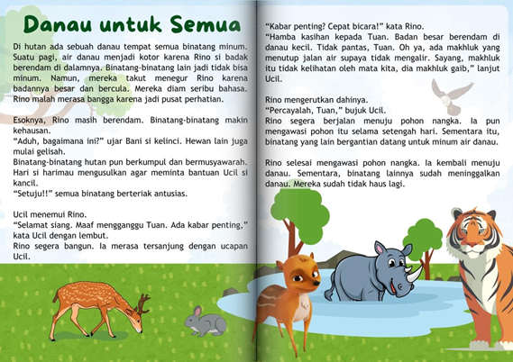
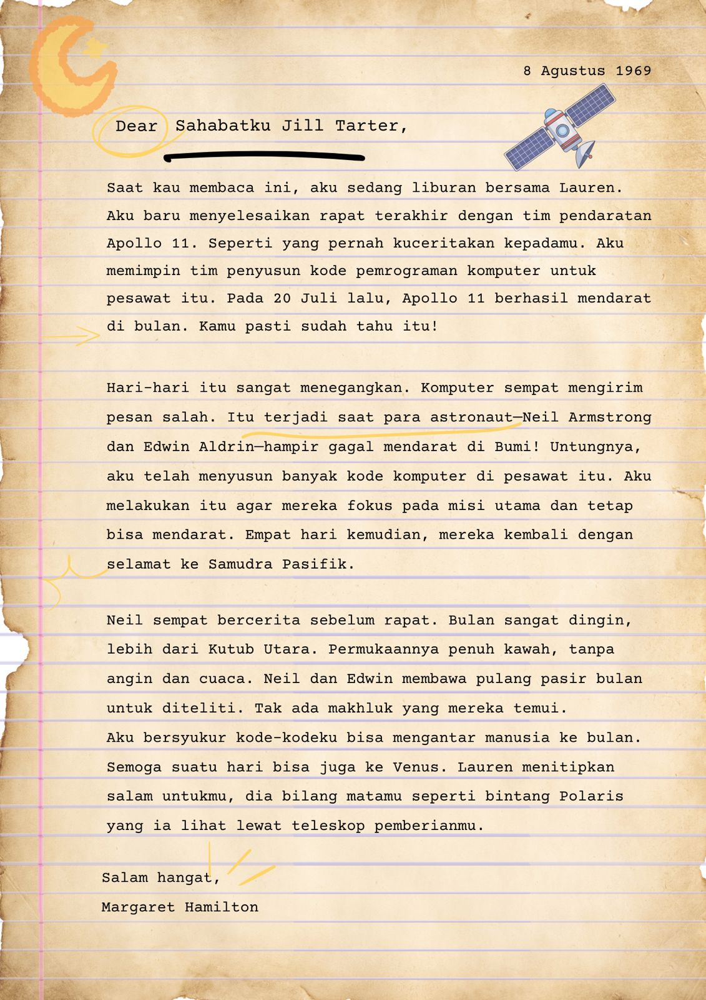
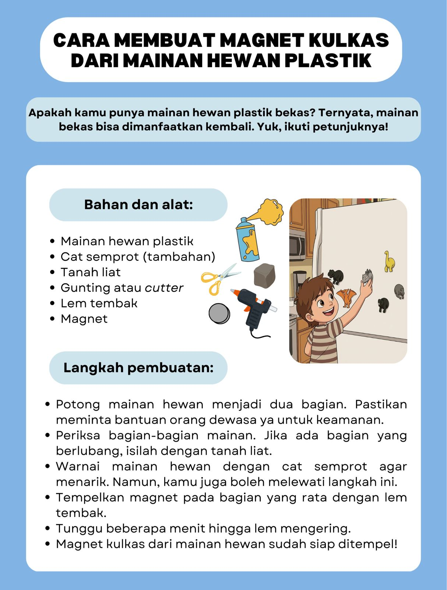
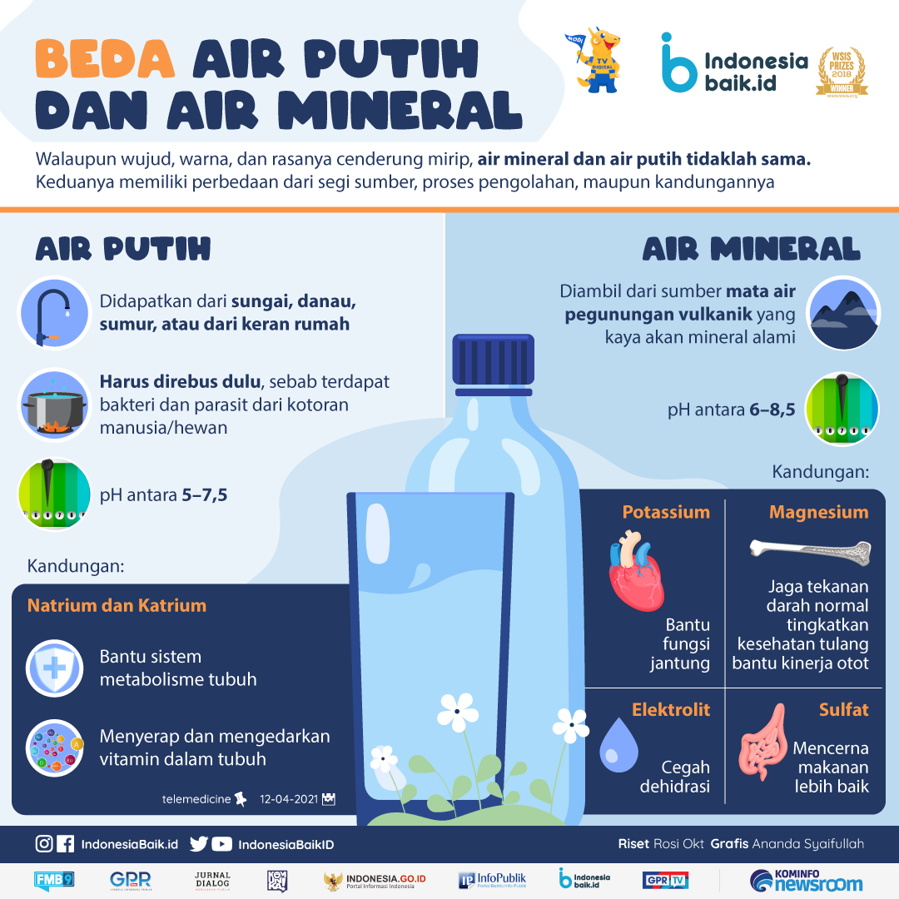
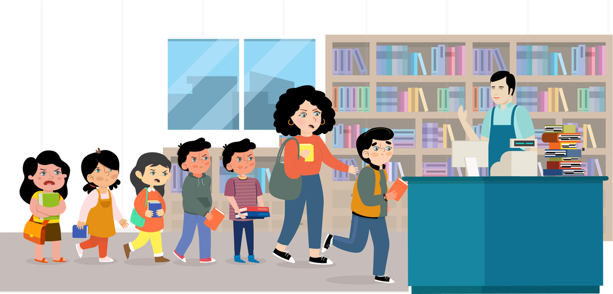
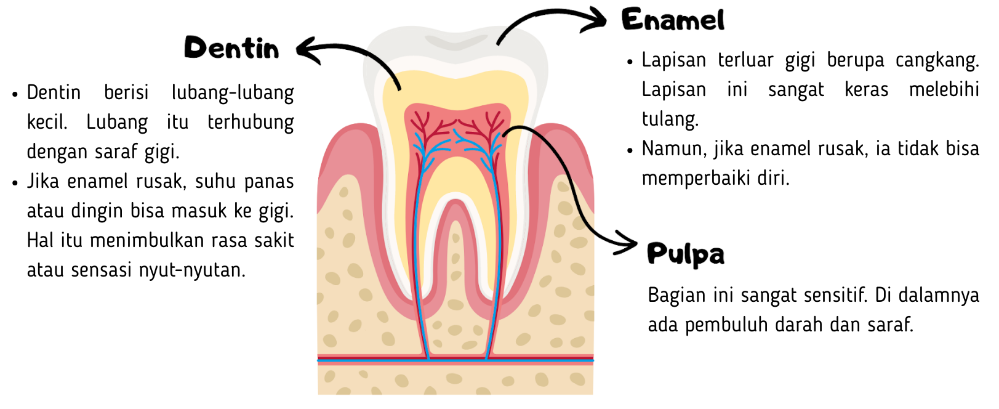
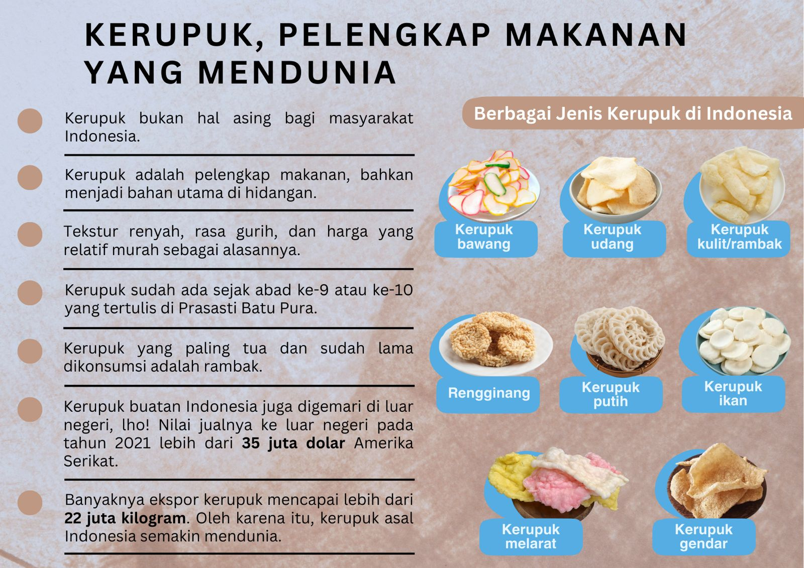
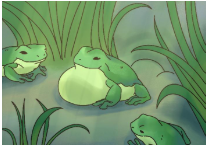

PAKET SOAL TKA SD/MI – Bahasa Indonesia
Mata Pelajaran: Bahasa Indonesia | Jumlah Soal: 105
Petunjuk: Pilihlah salah satu jawaban yang paling tepat. Kunci jawaban tersedia pada file terpisah.
Soal 1. 
Siapa yang mengusulkan untuk meminta bantuan hewan yang cerdik?
A. Bani.
B. Ucil.
C. Rino.
D. Hari.
Soal 2. 
Dalam teks, terdapat kalimat “Hari-hari itu sangat menegangkan.”
Makna kata menegangkan dalam kalimat tersebut adalah ….
A. membuat orang terus waspada dalam bekerja
B. menyebabkan orang kehilangan fokus saat bekerja
C. membuat suasana menjadi serius dan penuh ketakutan
D. menimbulkan rasa khawatir karena situasi yang genting
Soal 3. Surat membahas peran kode komputer dalam misi Apollo 11. Manakah pernyataan yang mendukung ide utama tersebut?
A. Kode komputer mengantar para manusia ke bulan dan Venus.
B. Kode komputer dibahas dalam rapat setelah misi utama selesai.
C. Kode komputer membuat astronaut dapat mendarat dengan aman.
D. Kode komputer mengirim pesan kesalahan saat proses pendaratan.
Soal 4. 
Sumber:https://www.idntimes.com/life/diy/5-ide-diy-magnet-kulkas-unik-dan-mudah-dibuat-01-rqg9b-txx8zf (dengan penyesuaian)Berdasarkan teks, benda yang umum digunakan dalam kerajinan adalah ….
A. mainan plastik
B. cat semprot
C. magnet
D. gunting
Soal 5. 
Sumber:https://www.idntimes.com/life/diy/5-ide-diy-magnet-kulkas-unik-dan-mudah-dibuat-01-rqg9b-txx8zf (dengan penyesuaian)Langkah kedua mendukung tujuan utama teks karena ….
Klik pada setiap pilihan jawaban benar! Jawaban benar lebih dari satu.
A. membuat permukaan mainan tertutup rapi
B. memudahkan anak mewarnai mainan hewan
C. menutup lubang agar magnet bisa menempel
Soal 6. Sumber:https://www.idntimes.com/life/diy/5-ide-diy-magnet-kulkas-unik-dan-mudah-dibuat-01-rqg9b-txx8zf (dengan penyesuaian)Mengapa mainan hewan dibagi menjadi dua bagian?
A. Supaya ukuran mainan lebih besar dan menarik.
B. Agar mainan bisa menempel di permukaan kulkas.
C. Karena mainan perlu diwarnai menggunakan cat semprot.
D. Untuk memudahkan pemberian lem tembak pada mainan.
Soal 7. Air Putih atau Air Mineral?Air adalah kebutuhan penting bagi kehidupan sehari-hari.
Setiap orang pasti meminumnya setiap hari untuk tetap sehat.
Ternyata, air mineral dan air putih berbeda. Yuk, simak penjelasannya!

Sumber: https://indonesiabaik.id/infografis/beda-air-putih-dan-air-mineralApa fungsi kandungan elektrolit yang dimiliki air mineral?
A. Menjaga tekanan darah normal.
B. Meningkatkan fungsi jantung.
C. Membantu mencegah dehidrasi.
D. Mempermudah sistem metabolisme tubuh.
Soal 8. Air Putih atau Air Mineral?Air adalah kebutuhan penting bagi kehidupan sehari-hari.
Setiap orang pasti meminumnya setiap hari untuk tetap sehat.
Ternyata, air mineral dan air putih berbeda. Yuk, simak penjelasannya!

Sumber: https://indonesiabaik.id/infografis/beda-air-putih-dan-air-mineralMengapa air putih lebih cocok untuk dikonsumsi setiap saat?
A. Sumber air putih mudah ditemukan.
B. Kandungan air putih sangat banyak.
C. Pengolahan air putih melalui proses alami.
D. Kandungan pH dalam air putih lebih tinggi.
Soal 9. Antre, Dong!

Tia dan Devi sedang berada di Toko Buku Gemar. Mereka mencari buku pelajaran. Setelah menemukan buku yang dicari, mereka menuju ke kasir. Mereka menempati urutan kelima dan keenam. Tak lama kemudian, ada orang yang mengantre di belakang mereka. Mereka sabar menunggu giliran membayar di kasir.
Namun, tiba-tiba seorang pemuda berjalan ke antrean paling depan. Tentu saja, orang-orang yang sudah mengantre lebih dulu memprotes.
“Tolong, antre, Dik,” kata seorang ibu yang berada di belakangnya.
“Maaf, Bu, saya harus cepat-cepat. Ini juga hanya satu buku, pasti tidak akan lama. Tidak akan sampai lima menit,” kata pemuda itu.
“Tidak boleh seperti itu, Nak. Kita harus membudayakan antre. Jika kamu harus cepat-cepat, bolehkah saya tahu alasannya?” ucap ibu itu.
“Iya, Kak, kita harus antre. Semua yang ada di sini juga ingin cepat dilayani. Apa Kakak tidak malu melihat seorang ibu-ibu saja bersedia mengantre? Kakak yang muda justru bertingkah sebaliknya,” sahut Tia. Devi terlihat hanya diam dan menggangguk.
Mendengar ada suara seperti keributan, Pak Satpam pun masuk. Dia menenangkan situasi. Pemuda itu harus tetap mengantre sesuai antrean.Siapakah tokoh yang menyelesaikan keributan dalam cerita tersebut?
A. Tia.
B. Devi.
C. Kasir.
D. Pak Satpam.
Soal 10. “Mereka diam seribu bahasa.”
Apa arti “diam seribu bahasa” pada teks fabel tersebut?
A. Para binatang di hutan tidak mampu melakukan sesuatu.
B. Semua binatang di hutan menahan untuk tidak berkomentar.
C. Penghuni hutan tidak mau mendengarkan pendapat orang lain.
D. Binatang-binatang di hutan tidak mengetahui masalah yang terjadi.
Soal 11. Antre, Dong!

Tia dan Devi sedang berada di Toko Buku Gemar. Mereka mencari buku pelajaran. Setelah menemukan buku yang dicari, mereka menuju ke kasir. Mereka menempati urutan kelima dan keenam. Tak lama kemudian, ada orang yang mengantre di belakang mereka. Mereka sabar menunggu giliran membayar di kasir.
Namun, tiba-tiba seorang pemuda berjalan ke antrean paling depan. Tentu saja, orang-orang yang sudah mengantre lebih dulu memprotes.
“Tolong, antre, Dik,” kata seorang ibu yang berada di belakangnya.
“Maaf, Bu, saya harus cepat-cepat. Ini juga hanya satu buku, pasti tidak akan lama. Tidak akan sampai lima menit,” kata pemuda itu.
“Tidak boleh seperti itu, Nak. Kita harus membudayakan antre. Jika kamu harus cepat-cepat, bolehkah saya tahu alasannya?” ucap ibu itu.
“Iya, Kak, kita harus antre. Semua yang ada di sini juga ingin cepat dilayani. Apa Kakak tidak malu melihat seorang ibu-ibu saja bersedia mengantre? Kakak yang muda justru bertingkah sebaliknya,” sahut Tia. Devi terlihat hanya diam dan menggangguk.
Mendengar ada suara seperti keributan, Pak Satpam pun masuk. Dia menenangkan situasi. Pemuda itu harus tetap mengantre sesuai antrean.Apa saja peristiwa yang dialami Tia dalam cerita?
Klik pada setiap pilihan jawaban benar! Jawaban benar lebih dari satu!
A. Mencari dan membeli buku bersama Devi.
B. Dinasihati oleh seorang ibu untuk antre.
C. Ikut menegur pemuda yang menyerobot antrean.
Soal 12. Kenapa Kita Tidak Boleh Malas Menyikat Gigi?Apakah kamu sering lupa menyikat gigi sebelum tidur?
Kenapa kita tidak boleh malas menyikat gigi?
Bayangkan jika kita tidak memiliki gigi.
Kita hanya bisa makan makanan lunak saja.
Makanan yang tidak perlu digigit atau dikunyah.
Oleh karena itu, kita harus merawat gigi.
Faktanya, gigi kita terdiri dari banyak lapisan, lho.

Bayangkan jika kita tidak menyikat gigi!
Bakteri jahat suka memakan sisa gula.
Misalnya sisa kue, keripik, roti, permen, dan yang lainnya.
Mereka melepaskan asam yang membuat gigi kita berlubang. Mengerikan, ya!
Yuk, rajin menyikat gigi sebelum tidur.
Jangan lupa juga menyikat gigi setelah bangun tidur.Sumber:
https://bobo.grid.id/read/081276994/kenapa-kita-tidak-boleh-malas-menyikat-gigi-ayo-cari-tahu?page=all dengan penyesuaian.Apa penyebab gigi berlubang?
A. Rusaknya enamel pada gigi.
B. Enamel gigi tidak sekuat tulang.
C. Pembuluh darah dan saraf sensitif.
D. Bakteri melepaskan zat asam pada gigi.
Soal 13. Kenapa Kita Tidak Boleh Malas Menyikat Gigi?Apakah kamu sering lupa menyikat gigi sebelum tidur?
Kenapa kita tidak boleh malas menyikat gigi?
Bayangkan jika kita tidak memiliki gigi.
Kita hanya bisa makan makanan lunak saja.
Makanan yang tidak perlu digigit atau dikunyah.
Oleh karena itu, kita harus merawat gigi.
Faktanya, gigi kita terdiri dari banyak lapisan, lho.

Bayangkan jika kita tidak menyikat gigi!
Bakteri jahat suka memakan sisa gula.
Misalnya sisa kue, keripik, roti, permen, dan yang lainnya.
Mereka melepaskan asam yang membuat gigi kita berlubang. Mengerikan, ya!
Yuk, rajin menyikat gigi sebelum tidur.
Jangan lupa juga menyikat gigi setelah bangun tidur.Sumber:
https://bobo.grid.id/read/081276994/kenapa-kita-tidak-boleh-malas-menyikat-gigi-ayo-cari-tahu?page=all dengan penyesuaian.Apa yang terjadi pada gigi jika tidak dirawat dengan baik?
Klik pada setiap pilihan jawaban benar! Jawaban benar lebih dari satu.
A. Gigi akan menjadi rusak dan bolong.
B. Gigi akan mengunyah makanan lebih lama.
C. Gigi akan ditumbuhi oleh bakteri sisa makanan.
Soal 14. Surat untuk SahabatSenyum itu enggan lepas dari bibirmu
Ketika kau melihat kedatanganku
Uluran tanganmu menyambutku
Untuk selalu bersama dan saling berpegang erat
Menghadapi segala suka maupun dukaBila sesekali kau marah
Itu karena aku tak mau memahamimu
Bila sesekali aku berbuat salah
Maafmu selalu terbuka untukkuKata terima kasih kuanggap lebih manis daripada kata maaf
untuk segala keceriaan yang selalu kau bagi
untuk segala ketulusan hati yang selalu kau beri
dan untuk kesetiaan yang tak akan pernah lekang oleh masaBila kita dewasa nanti
dan jarak juga waktu memisahkan kita
Satu harapku dalam hati
Kata persahabatan tidak akan pernah menjadi sebuah kenanganSumber: https://repositori.kemendikdasmen.go.id/16349/1/Surat%20Dari%20Samudra%20Antologi%20Puisi%20Anak%202018.pdf (dengan penyesuaian)Larik mana saja yang menunjukkan kerinduan?
Klik pada setiap pilihan jawaban benar! Jawaban benar lebih dari satu.
A. Senyum itu enggan lepas dari bibirmu.
B. Uluran tanganmu menyambutku.
C. Maafmu selalu terbuka untukku.
Soal 15. Surat untuk SahabatSenyum itu enggan lepas dari bibirmu
Ketika kau melihat kedatanganku
Uluran tanganmu menyambutku
Untuk selalu bersama dan saling berpegang erat
Menghadapi segala suka maupun dukaBila sesekali kau marah
Itu karena aku tak mau memahamimu
Bila sesekali aku berbuat salah
Maafmu selalu terbuka untukkuKata terima kasih kuanggap lebih manis daripada kata maaf
untuk segala keceriaan yang selalu kau bagi
untuk segala ketulusan hati yang selalu kau beri
dan untuk kesetiaan yang tak akan pernah lekang oleh masaBila kita dewasa nanti
dan jarak juga waktu memisahkan kita
Satu harapku dalam hati
Kata persahabatan tidak akan pernah menjadi sebuah kenanganSumber: https://repositori.kemendikdasmen.go.id/16349/1/Surat%20Dari%20Samudra%20Antologi%20Puisi%20Anak%202018.pdf (dengan penyesuaian)“kesetiaan yang tak akan pernah lekang oleh masa”
Makna pada larik puisi tersebut adalah …
A. Simbol penerimaan, dukungan, dan rasa aman dalam persahabatan.
B. Ungkapan kebahagiaan saat bertemu seseorang yang lama tidak bertemu.
C. Penghargaan dan rasa syukur sebagai hal yang berkesan dalam persahabatan.
D. Lambang hubungan abadi, tetap kuat meski waktu atau jarak memisahkan.
Soal 16. Surat untuk SahabatSenyum itu enggan lepas dari bibirmu
Ketika kau melihat kedatanganku
Uluran tanganmu menyambutku
Untuk selalu bersama dan saling berpegang erat
Menghadapi segala suka maupun dukaBila sesekali kau marah
Itu karena aku tak mau memahamimu
Bila sesekali aku berbuat salah
Maafmu selalu terbuka untukkuKata terima kasih kuanggap lebih manis daripada kata maaf
untuk segala keceriaan yang selalu kau bagi
untuk segala ketulusan hati yang selalu kau beri
dan untuk kesetiaan yang tak akan pernah lekang oleh masaBila kita dewasa nanti
dan jarak juga waktu memisahkan kita
Satu harapku dalam hati
Kata persahabatan tidak akan pernah menjadi sebuah kenanganSumber: https://repositori.kemendikdasmen.go.id/16349/1/Surat%20Dari%20Samudra%20Antologi%20Puisi%20Anak%202018.pdf (dengan penyesuaian)Pesan apa yang ingin disampaikan dalam puisi tersebut?
A. Persahabatan membuat seseorang harus mengalah demi menjaga hubungan.
B. Persahabatan harus selalu diutamakan di atas hubungan dengan keluarga.
C. Persahabatan membutuhkan pengertian, kesetiaan, dan saling menghargai.
D. Persahabatan sering diuji oleh konflik sehingga tidak selalu bertahan.
Soal 17. 
Sumber:
https://tirto.id/kriuk-renyah-dan-gurih-kerupuk-di-nusantara-gEb9 (dengan penyesuaian)
https://historia.id/kultur/articles/kriuk-sejarah-kerupuk-DEZwd (dengan penyesuaian)Apa nama kerupuk yang sudah dikonsumsi sejak lama?
A. Rengginang.
B. Melarat.
C. Rambak.
D. Gendar.
Soal 18. Hewan Pemakan Daun, Apa Itu?Hewan bisa dibagi menjadi tiga kelompok berdasarkan makanan mereka. Karnivora, hewan pemakan daging. Contoh hewan karnivora adalah singa. Selanjutnya herbivora, yaitu hewan pemakan tumbuhan. Sapi adalah contoh hewan herbivora. Terakhir, hewan omnivora, yaitu hewan pemakan daging dan tumbuhan, seperti beruang.
Dari kelompok herbivora, ada hewan yang hanya makan daun saja. Mereka disebut folivora. Hewan folivora hanya makan daun untuk hidup. Namun, daun itu susah untuk dicerna, apalagi kalau sudah tua. Kadang-kadang daun juga mengandung zat yang bisa berbahaya.
Agar bisa mencerna daun, tubuh hewan folivora punya cara khusus. Mereka punya usus yang panjang agar makanan bisa diproses lebih lama. Tubuh hewan folivora bekerja lebih lambat, jadi tidak terlalu banyak bergerak. Di dalam perut hewan folivora juga ada bakteri baik yang membantu mencerna daun. Beberapa hewan folivora lebih suka daun muda karena lebih lembut dan mudah dimakan.
Ada beberapa contoh hewan folivora yang hidup di alam. Misalnya, panda yang makan daun bambu. Ada juga koala yang makan daun eukaliptus. Mereka tinggal di hutan dan sangat bergantung pada daun untuk makan. Karena itu, hutan tempat mereka tinggal harus dijaga supaya mereka bisa terus hidup.Sumber: http://bobo.grid.id/read/084266052/bukan-herbivora-inilah-sebutan-untuk-hewan-pemakan-daun-tanaman?page=all (dengan penyesuaian)Apa saja contoh hewan folivora berdasarkan informasi tersebut?
Klik pada setiap pilihan jawaban benar! Jawaban benar lebih dari satu.
A. Sapi.
B. Koala.
C. Panda.
Soal 19. Hewan Pemakan Daun, Apa Itu?Hewan bisa dibagi menjadi tiga kelompok berdasarkan makanan mereka. Karnivora, hewan pemakan daging. Contoh hewan karnivora adalah singa. Selanjutnya herbivora, yaitu hewan pemakan tumbuhan. Sapi adalah contoh hewan herbivora. Terakhir, hewan omnivora, yaitu hewan pemakan daging dan tumbuhan, seperti beruang.
Dari kelompok herbivora, ada hewan yang hanya makan daun saja. Mereka disebut folivora. Hewan folivora hanya makan daun untuk hidup. Namun, daun itu susah untuk dicerna, apalagi kalau sudah tua. Kadang-kadang daun juga mengandung zat yang bisa berbahaya.
Agar bisa mencerna daun, tubuh hewan folivora punya cara khusus. Mereka punya usus yang panjang agar makanan bisa diproses lebih lama. Tubuh hewan folivora bekerja lebih lambat, jadi tidak terlalu banyak bergerak. Di dalam perut hewan folivora juga ada bakteri baik yang membantu mencerna daun. Beberapa hewan folivora lebih suka daun muda karena lebih lembut dan mudah dimakan.
Ada beberapa contoh hewan folivora yang hidup di alam. Misalnya, panda yang makan daun bambu. Ada juga koala yang makan daun eukaliptus. Mereka tinggal di hutan dan sangat bergantung pada daun untuk makan. Karena itu, hutan tempat mereka tinggal harus dijaga supaya mereka bisa terus hidup.Sumber: http://bobo.grid.id/read/084266052/bukan-herbivora-inilah-sebutan-untuk-hewan-pemakan-daun-tanaman?page=all (dengan penyesuaian)Bagan mana yang sesuai untuk menggambarkan informasi pada teks tersebut?
Soal 20. Hewan Pemakan Daun, Apa Itu?Hewan bisa dibagi menjadi tiga kelompok berdasarkan makanan mereka. Karnivora, hewan pemakan daging. Contoh hewan karnivora adalah singa. Selanjutnya herbivora, yaitu hewan pemakan tumbuhan. Sapi adalah contoh hewan herbivora. Terakhir, hewan omnivora, yaitu hewan pemakan daging dan tumbuhan, seperti beruang.
Dari kelompok herbivora, ada hewan yang hanya makan daun saja. Mereka disebut folivora. Hewan folivora hanya makan daun untuk hidup. Namun, daun itu susah untuk dicerna, apalagi kalau sudah tua. Kadang-kadang daun juga mengandung zat yang bisa berbahaya.
Agar bisa mencerna daun, tubuh hewan folivora punya cara khusus. Mereka punya usus yang panjang agar makanan bisa diproses lebih lama. Tubuh hewan folivora bekerja lebih lambat, jadi tidak terlalu banyak bergerak. Di dalam perut hewan folivora juga ada bakteri baik yang membantu mencerna daun. Beberapa hewan folivora lebih suka daun muda karena lebih lembut dan mudah dimakan.
Ada beberapa contoh hewan folivora yang hidup di alam. Misalnya, panda yang makan daun bambu. Ada juga koala yang makan daun eukaliptus. Mereka tinggal di hutan dan sangat bergantung pada daun untuk makan. Karena itu, hutan tempat mereka tinggal harus dijaga supaya mereka bisa terus hidup.Sumber: http://bobo.grid.id/read/084266052/bukan-herbivora-inilah-sebutan-untuk-hewan-pemakan-daun-tanaman?page=all (dengan penyesuaian)Apa gagasan utama yang disampaikan pada paragraf ketiga teks tersebut?
A. Jenis daun yang cocok untuk hewan folivora.
B. Pembagian hewan berdasarkan makanan mereka.
C. Cara khusus tubuh hewan folivora mencerna daun.
D. Peranan penting hutan bagi kehidupan hewan folivora.
Soal 21. Kenthus yang Sombong

Di tengah padang rumput terdapat kolam. Kolam itu dihuni banyak katak. Kenthus adalah anak katak yang paling besar dan kuat. Dia merasa tidak terkalahkan.
Suatu pagi Kenthus melompat di padang rumput. Ada seekor anak lembu. Ia sedang bermain dan berlari-lari. Anak lembu itu menjulurkan lidahnya untuk makan. Lidahnya mengenai Kenthus.
Kenthus melompat. “Berani makhluk ini mengusikku!” kata Kenthus sembari menuju ke tepi kolam.
Kenthus sampai di tepi kolam.
“Kenthus, mengapa kamu terengah-engah?” tanya Naka.
“Wajahmu terlihat pucat,” kata Tata.
“Lihatlah di padang rumput itu. Makhluk itu sangat sombong. Ia tadi hendak menelanku!” kata Kenthus dengan napas terengah-engah.
Koko, kakak Kenthus, menjelaskan. “Makhluk itu anak lembu. Anak lembu tidak jahat. Lembu tidak makan katak. Ia hanya makan rumput.”
“Aku tidak percaya. Tadi, aku dikejarnya dan hampir ditendang olehnya,” jawab Kenthus menggebu-gebu.
Koko hanya diam mendengar adiknya berbicara.
“Aku sebenarnya bisa melawannya dengan mengembungkan diriku,” lanjut Kenthus dengan bangga.
“Kamu tidak akan dapat menandingi lembu itu. Perbuatan kamu berbahaya,” kata Koko.
Kenthus mengembungkan tubuhnya. Perutnya membesar secara berlebihan. Tiba-tiba ia jatuh lemas. Perutnya terasa sakit. Perlahan-lahan ia mengempiskan tubuhnya. Akhirnya tubuh Kenthus kembali ke ukuran semula.
“Kenthus, kamu tidak apa-apa?” tanya Koko.
“Aku baik-baik saja. Maafkan aku, Kak. Aku tidak mendengar kata-katamu,” kata Kenthus sembari menunduk.Sumber teks: https://ceritaanak.org/cerita-anak-anak-katak-anak-lembu/ (dengan penyesuaian)Apa yang dijelaskan Koko tentang anak lembu?
Klik pada setiap pilihan jawaban benar! Jawaban benar lebih dari satu.
A. Makhluk itu sangat sombong.
B. Anak lembu tidak jahat.
C. Lembu tidak makan katak.
Soal 22. Kenthus yang SombongDi tengah padang rumput terdapat kolam. Kolam itu dihuni banyak katak. Kenthus adalah anak katak yang paling besar dan kuat. Dia merasa tidak terkalahkan.
Suatu pagi Kenthus melompat di padang rumput. Ada seekor anak lembu. Ia sedang bermain dan berlari-lari. Anak lembu itu menjulurkan lidahnya untuk makan. Lidahnya mengenai Kenthus.
Kenthus melompat. “Berani makhluk ini mengusikku!” kata Kenthus sembari menuju ke tepi kolam.
Kenthus sampai di tepi kolam.
“Kenthus, mengapa kamu terengah-engah?” tanya Naka.
“Wajahmu terlihat pucat,” kata Tata.
“Lihatlah di padang rumput itu. Makhluk itu sangat sombong. Ia tadi hendak menelanku!” kata Kenthus dengan napas terengah-engah.
Koko, kakak Kenthus, menjelaskan. “Makhluk itu anak lembu. Anak lembu tidak jahat. Lembu tidak makan katak. Ia hanya makan rumput.”
“Aku tidak percaya. Tadi, aku dikejarnya dan hampir ditendang olehnya,” jawab Kenthus menggebu-gebu.
Koko hanya diam mendengar adiknya berbicara.
“Aku sebenarnya bisa melawannya dengan mengembungkan diriku,” lanjut Kenthus dengan bangga.
“Kamu tidak akan dapat menandingi lembu itu. Perbuatan kamu berbahaya,” kata Koko.
Kenthus mengembungkan tubuhnya. Perutnya membesar secara berlebihan. Tiba-tiba ia jatuh lemas. Perutnya terasa sakit. Perlahan-lahan ia mengempiskan tubuhnya. Akhirnya tubuh Kenthus kembali ke ukuran semula.
“Kenthus, kamu tidak apa-apa?” tanya Koko.
“Aku baik-baik saja. Maafkan aku, Kak. Aku tidak mendengar kata-katamu,” kata Kenthus sembari menunduk.Sumber teks: https://ceritaanak.org/cerita-anak-anak-katak-anak-lembu/ (dengan penyesuaian)Apa kejadian yang membuat Kenthus merasa menyesal?
A. Kenthus hendak ditelan anak lembu di padang rumput.
B. Kenthus berlari ke tepi kolam hingga terengah-engah.
C. Kenthus mengembang terlalu besar hingga jatuh lemas.
D. Kenthus dimarahi Koko karena terlalu menggebu-gebu.
Soal 23. [Bacalah teks berikut!]Pesona Alam Taman Nasional KomodoTaman Nasional Komodo terletak di Kepulauan Nusa Tenggara. Kawasan ini terdiri dari tiga pulau besar utama, yaitu Pulau Komodo, Pulau Rinca, dan Pulau Padar, serta sejumlah pulau kecil lainnya. Setiap pulau menawarkan karakteristik tersendiri, seperti padang sabana yang luas, perbukitan yang menantang, hingga pantai-pantai tersembunyi.
Taman nasional ini sangat terkenal di mata dunia karena menjadi habitat asli kadal raksasa purba, yaitu komodo (Varanus komodoensis). Selain pesona daratannya, kawasan ini juga menyimpan keanekaragaman hayati laut yang sangat kaya. Terdapat lebih dari 1.000 spesies ikan, 260 jenis terumbu karang, dan berbagai mamalia laut seperti lumba-lumba. Sayangnya, keseimbangan ekosistem ini kerap terancam oleh aktivitas perburuan liar dan perubahan iklim global.
Tidak hanya satwa langka, Taman Nasional Komodo juga menyuguhkan pemandangan alam yang memesona hati. Pantai Merah atau Pink Beach dengan butiran pasir kemerahannya menjadi daya tarik yang sangat memukau. Angin perbukitan dan deburan ombak laut biru sangat cocok bagi wisatawan yang ingin melepas penat. Keindahan alam di sini sangat pas untuk wisatawan yang gemar menjelajah alam bebas, snorkeling, maupun sekadar bersantai menikmati lanskap kepulauan. Taman nasional ini adalah salah satu warisan alam dunia kebanggaan Indonesia.Bagan manakah yang paling sesuai untuk menggambarkan Taman Nasional Komodo pada teks?
A. Pulau Utama (Komodo, Rinca, Padar) — Satwa Endemik (Komodo) — Tujuan Wisata (Menjelajah alam, Snorkeling)
B. Pulau Utama (Bali, Lombok) — Satwa Endemik (Komodo) — Tujuan Wisata (Belanja suvenir)
C. Pulau Utama (Komodo, Rinca) — Jenis Keanekaragaman (Pasir merah) — Tujuan Wisata (Menikmati kota)
D. Pulau Utama (Jawa, Bali, Padar) — Jenis Keanekaragaman (Lumba-lumba) — Tujuan Wisata (Bersantai)
Soal 24. [Bacalah teks berikut!]Pentingnya Membawa Bekal Sehat ke SekolahTeks pada soal nomor 9.Manakah yang merupakan kesimpulan isi teks?
A. Membawa bekal sendiri dari rumah menjamin kebersihan dan gizi makanan siswa.
B. Kebiasaan membawa bekal sehat melatih kemandirian dan sikap hemat pada siswa.
C. Membawa bekal ke sekolah merupakan kegiatan yang merepotkan dan tidak bermanfaat.
Soal 25. [Bacalah teks berikut!]Gelar Karya P5 Bhinneka Tunggal IkaSetiap akhir semester, siswa-siswa SDN Morokrembangan 1 mengadakan kegiatan Gelar Karya P5 (Projek Penguatan Profil Pelajar Pancasila) yang mengusung tema "Bhinneka Tunggal Ika". Kegiatan ini diikuti oleh seluruh siswa mulai dari kelas 1 hingga kelas 6. Acara gelar karya dilaksanakan setelah kegiatan doa bersama, dimulai pada pukul 07.30 dan berlangsung selama dua jam. Seluruh siswa sangat antusias dengan kegiatan festival budaya ini. Setiap kelas mendapatkan stan masing-masing dengan didampingi oleh guru kelasnya. Bapak/Ibu guru juga ikut mendampingi pameran dan pentas seni bersama dengan siswanya. Siswa kelas 5 bertugas menyajikan makanan tradisional, menampilkan tarian daerah, serta menjaga kebersihan area pameran budaya.
Setelah kegiatan gelar karya selesai, seluruh siswa dipersilakan untuk merapikan kembali stan mereka sekaligus beristirahat sejenak. Kegiatan ini membuat siswa lebih mengenal keberagaman budaya nusantara sehingga semua siswa bisa belajar menghargai perbedaan dengan aman dan rukun. Bapak/Ibu guru juga mengingatkan seluruh siswa agar selalu menjaga kerukunan di sekolah demi kenyamanan semua warga sekolah. Karena menjaga toleransi dan kerukunan bukan hanya saat perayaan P5, melainkan setiap saat dan semua wajib menerapkannya.Berapa lama kegiatan gelar karya P5 dilaksanakan di sekolah tersebut?
A. 1 jam
B. 3 jam
C. 2 jam
D. 4 jam
Soal 26. [Bacalah teks berikut!]Gelar Karya P5 Bhinneka Tunggal IkaTeks pada soal nomor 11.Berdasarkan teks bacaan tersebut, siswa kelas 5 melakukan beberapa hal saat kegiatan pameran antara lain ....
A. menyajikan makanan tradisional
B. menampilkan tarian daerah
C. membersihkan ruang kepala sekolah
Soal 27. [Bacalah teks berikut!]Raka dan Kejutan untuk KakekRaka adalah seorang anak laki-laki berusia delapan tahun. Ia memiliki rambut ikal, bertubuh gesit, dan sangat gemar menggambar. Raka dikenal sebagai anak yang periang dan sangat menyayangi keluarganya. Ia tinggal serumah dengan Ayah, Ibu, dan Kakek Husein.
Kakek Husein adalah kakek kesayangan Raka. Beliau berusia 65 tahun, berambut putih, dan sangat suka merawat tanaman di kebun belakang. Namun, hari itu Kakek Husein sedang sakit flu dan harus beristirahat di kamarnya. Bagi Raka, Kakek Husein adalah sosok teman bermain yang seru, sehingga Raka ingin melakukan sesuatu agar kakeknya merasa lebih baik.
Ayah Raka berusia 38 tahun, seorang pekerja keras yang selalu berangkat pagi. Sementara itu, Ibu Raka berusia 35 tahun, sosok yang sabar dan selalu menyiapkan makanan bergizi untuk keluarga.
Melihat kakeknya terbaring lemah, Raka berusaha menyiapkan kejutan kecil. Ia memikirkan hal istimewa untuk menunjukkan rasa sayangnya kepada Kakek Husein. Raka memutuskan untuk membuat gambar kebun kesayangan kakek yang indah. Walaupun ia sempat kesulitan mencari pensil warnanya yang hilang, Raka tetap berusaha mencarinya sampai ketemu agar bisa menyelesaikan gambarnya.
Raka menunjukkan sikap peduli, pantang menyerah, dan menyayangi keluarga. Tindakannya mengajarkan bahwa perhatian sederhana yang diberikan dengan tulus dapat menjadi obat yang menyenangkan hati orang yang sedang sakit.Berdasarkan teks tersebut, tempat yang menjadi tujuan Raka untuk memberikan kejutannya kepada Kakek Husein adalah ....
A. kebun belakang
B. kamar kakek
C. sekolah Raka
D. ruang tamu keluarga
Soal 28. [Bacalah teks berikut!]Raka dan Kejutan untuk KakekTeks pada soal nomor 13.Berdasarkan teks tersebut, manakah amanat yang dapat disimpulkan dari tindakan Raka?
A. Raka tetap berusaha mencari solusi ketika menghadapi kendala saat membuat kejutan.
B. Raka menunjukkan kasih sayangnya kepada Kakek melalui tindakan yang tulus.
C. Raka harus membelikan obat yang mahal agar kakeknya merasa bahagia dan sembuh.
Soal 29. [Bacalah teks berikut!]Raka dan Kejutan untuk KakekTeks pada soal nomor 13.Jika kamu berada dalam situasi seperti Raka yang ingin menghibur anggota keluarga yang sedang sakit, tindakan yang paling tepat adalah ....
A. membiarkan saja karena sudah ada orang dewasa yang merawatnya
B. memaksa membeli hadiah mainan mahal di toko agar ia senang
C. meminta teman untuk membuatkan gambar tanpa ikut berusaha
D. menunjukkan perhatian dengan melakukan hal baik sesuai kemampuan
Soal 30. [Bacalah teks berikut!]Pentingnya Menghemat Energi Listrik di RumahListrik merupakan salah satu energi yang sangat penting dalam kehidupan sehari-hari. Hampir semua kegiatan kita di rumah membutuhkan energi listrik, mulai dari menyalakan lampu, menonton televisi, menyetrika pakaian, hingga menggunakan lemari es. Tanpa adanya aliran listrik, banyak aktivitas manusia modern yang akan terhambat dan menjadi sangat terbatas.
Penggunaan listrik yang berlebihan dan tidak terkontrol dapat menimbulkan berbagai masalah. Dampak yang paling cepat terasa dari pemborosan energi listrik adalah membengkaknya tagihan bulanan keluarga. Selain itu, karena sebagian besar pembangkit listrik di negara kita masih mengandalkan bahan bakar fosil seperti batu bara, pemborosan listrik juga turut menyumbang peningkatan polusi udara yang memicu terjadinya pemanasan global.
Oleh karena itu, kita harus mulai membiasakan diri untuk menghemat energi listrik dengan langkah-langkah yang bijak. Cara menghemat listrik sebenarnya sangat mudah dilakukan. Kita bisa memulainya dengan mematikan lampu pada siang hari karena sudah ada cahaya matahari, mencabut kabel peralatan elektronik dari stopkontak saat tidak digunakan, serta mematikan televisi jika sudah tidak ditonton.
Menghemat listrik bukan hanya tentang menekan biaya pengeluaran, tetapi juga menjadi wujud nyata kepedulian kita terhadap kelestarian bumi. Kebiasaan baik dalam mengelola energi ini akan menciptakan lingkungan yang lebih sehat untuk masa depan.Amanat yang tepat berdasarkan teks tersebut adalah ....
A. Kita sebaiknya menyalakan semua peralatan elektronik secara bersamaan agar pekerjaan rumah cepat selesai
B. Pemborosan energi listrik hanya berdampak pada tagihan tanpa memberikan pengaruh buruk pada lingkungan
C. Kita perlu membiasakan diri menghemat energi listrik untuk menekan biaya dan menjaga kelestarian bumi
D. Menghemat listrik cukup dilakukan dengan cara mematikan seluruh lampu rumah pada malam hari saja
Soal 31. [Bacalah teks berikut!]Pentingnya Menghemat Energi Listrik di RumahTeks pada soal nomor 16.Pokok pembahasan dari paragraf kedua dalam teks tersebut adalah ....
A. dampak negatif akibat pemborosan penggunaan energi listrik
B. cara mematikan peralatan elektronik yang benar di rumah
C. jenis-jenis bahan bakar fosil penyumbang pemanasan global
D. manfaat ketersediaan energi listrik bagi kehidupan manusia
Soal 32. [Bacalah teks berikut!]Pentingnya Menghemat Energi Listrik di RumahTeks pada soal nomor 16.Pernyataan yang sesuai dengan isi teks di atas adalah ....
A. Mematikan televisi jika tidak ditonton dan mencabut kabel elektronik yang tidak dipakai adalah contoh tindakan hemat listrik.
B. Pemborosan listrik dapat menyebabkan tagihan bulanan membengkak dan turut memicu terjadinya pemanasan global.
C. Penggunaan listrik yang berlebihan sangat dianjurkan karena seluruh pembangkit listrik saat ini sudah bebas dari polusi udara.
Soal 33. [Bacalah teks berikut!]Dika senang bersama Kak Bayu.Kak Bayu pandai merakit robot mainan.
Dika suka meniru Kak Bayu.
Namun, hari ini Kak Bayu mengeluhkan pendengarannya.
Apa yang terjadi?
Kak Bayu sulit mendengar suara dengan jelas.
Sudah beberapa hari semua terdengar sayup. Semua terdengar seperti berdengung.
Kata dokter, Kak Bayu mengalami gangguan pendengaran.
Dokter meminta Kak Bayu memakai alat bantu dengar khusus.
Alat itu untuk telinga yang bermasalah.
Kak Bayu menolak, tetapi Dika terus membujuk.
Kak Bayu malu memakainya. Alat itu terlihat besar. Kak Bayu tidak terbiasa.
Sebenarnya, Dika ingin seperti biasanya. Dika ingin bermain robot bersama Kak Bayu.
Kak Bayu tidak mau terlihat aneh. Bagaimana caranya, ya?
Aha! Tunggu ya, Kak.
Tiba-tiba,
Apa yang dilakukan Dika?
Dika memakai alat bantu mainan dari kertas!
Apakah Dika terlihat aneh?
Tidak, memakai alat bantu mainan tidak aneh, kok!
Kak Bayu mengerti maksud Dika, tidak perlu malu memakai alat bantu dengar. Ayo, kita merakit robot!
Akhirnya, Kak Bayu terbiasa memakai alat bantu dengar.
Kak Bayu tidak malu lagi memakainya.
Kak Bayu senang bisa kembali merakit robot mainan bersama Dika.
Sumber: Laila, Alat Bantu Kak Bayu, Kemendikdasmen, 2022Masalah yang dihadapi Kak Bayu pada cerita di atas adalah....
A. memakai alat bantu mainan
B. suka mengajak Dika merakit robot
C. mengalami gangguan pendengaran
D. pandai merakit robot mainan
Soal 34. [Bacalah teks berikut!]Pesona Alam Taman Nasional KomodoTeks pada soal nomor 1.Apa maksud dari ungkapan kata yang dicetak tebal dalam teks?
A. Sangat indah dan menarik perhatian.
B. Memberikan daya tarik yang memukau.
C. Membuat perasaan menjadi sedih dan haru.
Soal 35. [Bacalah teks berikut!]Dika senang bersama Kak Bayu.Teks pada soal nomor 19.Sifat yang ditunjukkan tokoh Dika dalam cerita tersebut adalah ....
A. kreatif, dibuktikan dengan ia mau memakai alat bantu mainan demi Kak Bayu
B. suka merakit, dibuktikan dengan ia pandai merakit robot mainan
C. lapang dada, dibuktikan dengan ia membujuk Kak Bayu untuk memakai alat bantu dengar
D. minder, dibuktikan dengan ia menolak memakai alat bantu dengar
Soal 36. [Bacalah teks berikut!]Dika senang bersama Kak Bayu.Teks pada soal nomor 19.Apa yang dapat kamu lakukan untuk membantu temanmu yang merasa malu dan enggan memakai alat bantu kesehatan karena takut terlihat aneh seperti yang dialami Kak Bayu?
A. Memberi pujian dan menyemangati bahwa memakai alat bantu kesehatan itu keren dan bermanfaat untuk kesehatan.
B. Menyarankannya agar hanya memakai alat bantu tersebut saat berada di dalam kamar sendirian saja.
C. Menemaninya memakai alat bantu atau barang serupa agar ia tidak merasa sendirian dan lebih percaya diri.
Soal 37. [Bacalah teks berikut!]Randi, Bayu dan Doni adalah tiga sahabatRandi : "Ahh, capeknya, tapi seru banget hari ini."
Bayu : "Bener, aku tadi mau terjatuh, waktu lempar egrangku."
Randi : "Wah, kamu hebat, Bayu!"
Bayu : "Ran, egrang yang kamu miliki juga terlihat kuat."
Randi : "Jelas dong, asli buatan ayahku, memang ayahku seorang yang bertangan dingin."
Doni : "Ah, kalian ini, omongin apa, sih? Aku sama sekali nggak ngerti."
Bayu : "Hah, kamu Doni, nggak mau ikutan main sama kami, hanya main game saja."
Doni : "Nggak seru, mainan apaan itu?" (sambil memegang gawai ditangannya)
Randi : "Apa kamu tidak tahu mainan Egrang, mainan tradisional kita?"
Bayu : "Hmm, bener Doni, dengan kita bermain permainan tradisional kita bisa berolahraga sambil bermain."
Randi : "Bener sekali. Kita bisa juga melestarikan budaya daerah dan mengurangi kecanduan dari HP."
Doni : "Hmm, bener juga. Main game di HP membuat tubuhku terasa kaku, aku mau ikut main dengan kalian."
Randi : "Nah gitu, Minggu besok kita main lagi ya, nanti aku ajari membuat egrang seperti yang ayahku ajarkan".
Sumber: Risa Puji Lestari, 2026.Makna ungkapan kata yang dicetak tebal berdasarkan dialog yang diucapkan Randi dalam wacana tersebut adalah....
A. orang yang pendiam dan tidak suka bergaul
B. sering mengalami kegagalan saat memulai pekerjaan
C. suka menolong orang lain yang mengalami kesusahan
D. selalu berhasil dalam setiap usaha yang dilakukan
Soal 38. [Bacalah teks berikut!]Randi, Bayu dan Doni adalah tiga sahabatTeks pada soal nomor 22.Setelah menyadari bahwa bermain HP membuat tubuhnya terasa kaku, yang dilakukan Doni adalah....
A. berkunjung ke Kebun Mangrove
B. berolahraga bersama keluarga
C. berjalan keliling Taman Prestasi
D. bermain permainan tradisional
Soal 39. [Bacalah teks berikut!]Kancil dan Semut yang PintarDi pinggir sebuah sungai yang jernih, hiduplah seekor Kancil yang lincah dan koloni Semut Merah. Suatu hari, musim hujan yang lebat melanda hutan tersebut hingga sungai meluap. Hewan-hewan mulai menyelamatkan diri, termasuk seekor Semut Merah yang tergelincir ke dalam genangan air yang deras. Namun, kaki Semut Merah terlalu kecil untuk melawan arus air yang berputar di genangan tersebut.
Melihat Semut Merah yang hampir tenggelam, Si Kancil menghampiri dan meletakkan sehelai daun hijau di dekat air. "Semut, cepatlah naik ke atas daun itu!" kata Kancil. Semut Merah mengikuti saran tersebut dengan cekatan. Perlahan-lahan, daun yang ditumpanginya mengapung ke tepi daratan. Semut Merah pun akhirnya selamat dan berterima kasih kepada Kancil atas pertolongannya yang cerdik. Cerita ini mengajarkan anak-anak untuk saling tolong-menolong dan peduli terhadap sesama makhluk hidup.
Sumber: M. Rantesi, Buku Kumpulan Dongeng Fabel Pengantar Tidur untuk Anak, Penerbit Laksana/Bintang Griya Pidana, 2018Berdasarkan cerita "Kancil dan Semut yang Pintar" di atas, manakah di bawah ini yang merupakan kosakata khusus yang merujuk pada bagian tubuh hewan atau benda tempat mengalir/menampung air?
A. daun
B. kaki
C. genangan
Soal 40. [Bacalah teks berikut!]Kancil dan Semut yang PintarTeks pada soal nomor 25.Berdasarkan cerita di atas, kata "musim hujan yang lebat" memicu terjadinya peristiwa utama yang dialami oleh hewan-hewan di hutan, yaitu....
A. Kancil dan Semut Merah berebut daun hijau di tepi sungai
B. sungai meluap hingga Semut Merah tergelincir ke genangan air yang deras
C. Semut Merah kehilangan kakinya yang kecil di pinggir sungai
D. Kancil terjebak di tengah arus sungai dan meminta bantuan Semut Merah
Soal 41. [Bacalah teks berikut!]Berkunjung ke Museum NasionalDi pagi yang cerah dan sejuk, Dimas beserta Siska pergi ke museum nasional di pusat kota dengan menggunakan bus umum. Mereka berangkat pukul 08.30 pagi. Perjalanan menuju museum cukup jauh, yaitu sekitar sepuluh kilometer. Meskipun cukup melelahkan, mereka tetap bersemangat karena sudah membayangkan berbagai koleksi benda bersejarah yang menarik untuk dilihat secara langsung.
Sesampainya di museum, Dimas dan Siska membeli tiket, kemudian masuk dengan tertib. Mereka berjalan menyusuri setiap ruang pameran dan mengamati setiap benda pamer dengan penuh rasa ingin tahu. Setelah beberapa saat, akhirnya mereka menemukan benda pamer yang sesuai dengan minat masing-masing.
Dimas memilih mengamati koleksi senjata tradisional Nusantara. Ia sangat tertarik mengetahui bentuk dan sejarah senjata dari berbagai daerah di Indonesia. Sementara itu, Siska memilih melihat koleksi keramik kuno peninggalan masa lampau yang tertata rapi di dalam etalase kaca. Ia mengamatinya dengan penuh kagum.
Mereka sangat senang berada di museum. Selain dapat melihat langsung benda bersejarah yang mereka sukai, mereka juga memperoleh banyak pengetahuan baru tentang kebudayaan bangsa.
(Sumber: Moch. Khatim, 2026)Apa yang diamati Siska ketika di museum?
A. koleksi senjata tradisional
B. koleksi keramik kuno
C. lukisan pahlawan nasional
D. pakaian adat Nusantara
Soal 42. [Bacalah teks berikut!]Berkunjung ke Museum NasionalTeks pada soal nomor 28.Nilai positif yang bisa ditemukan pada cerita di atas adalah ....
A. berkunjung ke museum dapat membantu menghilangkan rasa penat
B. museum adalah tempat untuk melatih kemandirian dan kedisiplinan
C. belajar sejarah dan budaya menambah wawasan serta pengetahuan
D. pergi ke museum membuat pikiran kita semakin pusing
Soal 43. [Bacalah teks berikut!]Banjir Bandang Kabupaten DemakDemak - Musibah banjir melanda sejumlah kecamatan di Kabupaten Demak, Jawa Tengah. Berdasarkan data Badan Penanggulangan Bencana Daerah (BPBD) hingga Rabu sore, jumlah warga yang mengungsi mencapai 1.250 jiwa. Kepala Pelaksana BPBD, Budi Santoso, menyatakan bahwa banjir merendam ribuan rumah warga dengan ketinggian air bervariasi antara 50 hingga 150 sentimeter.
"Sebanyak 15 desa dari 3 kecamatan terdampak genangan air. Kecamatan Karanganyar menjadi wilayah dengan jumlah pengungsi terbanyak," ujar Budi dalam keterangan persnya, Rabu (12/2/2026). Ia juga menambahkan bahwa jalur transportasi darat di beberapa titik sempat terhambat akibat tingginya genangan air.
Di lokasi pengungsian, kondisi kesehatan warga dan ketersediaan barang mulai menjadi perhatian. Relawan kesehatan di posko Balai Desa Karanganyar, Rina, menyebutkan bahwa beberapa balita dan lansia membutuhkan perhatian medis khusus. "Bantuan makanan pokok dan air bersih sudah datang, namun kami masih kekurangan pasokan selimut dan obat-obatan," ungkap Rina saat ditemui di posko utama.Berdasarkan bacaan, pernyataan yang sesuai dengan informasi tentang korban banjir adalah ...
A. Kecamatan Karanganyar merupakan wilayah dengan jumlah pengungsi terbanyak
B. Seluruh pengungsi telah mendapatkan pasokan selimut dan obat-obatan yang mencukupi
C. Banjir di Kabupaten Demak menyebabkan lebih dari seribu jiwa harus mengungsi
Soal 44. [Bacalah teks berikut!]PENGUSAHA MUDA PEDULI LINGKUNGANBudi : "Selamat siang, Kak Tari."
Tari : "Selamat siang, Budi."
Budi : "Saya Budi. Saya mendapat tugas dari sekolah untuk mewawancarai Kak Tari tentang usaha tas daur ulang yang Kakak jalankan. Bolehkah saya bertanya beberapa hal?"
Tari : "Tentu saja, silakan."
Budi : "Sejak kapan Kak Tari memulai usaha kerajinan tas ini?"
Tari : "Saya memulainya sejak awal tahun 2020."
Budi : "Mengapa Kakak memilih sampah plastik bekas sebagai bahan utamanya?"
Tari : "Saya sangat peduli pada kebersihan lingkungan dan kebetulan saya hobi menjahit. Banyak sampah bungkus plastik di sekitar kita yang terbuang sia-sia. Saya ingin mengolahnya menjadi barang yang berguna dan bernilai, sekaligus membantu mengurangi tumpukan sampah."
Budi : "Apakah butuh modal uang yang besar untuk memulainya, Kak?"
Tari : "Sama sekali tidak. Modal saya sangat kecil karena bahan utamanya adalah bungkus plastik bekas yang saya kumpulkan dari tetangga dan warung sekitar. Saya hanya membeli benang dan kain pelapis secukupnya pada waktu itu."
Budi : "Lalu, apa saja tantangan yang Kakak hadapi saat menjalankan usaha ini?"
Tari : "Tantangannya lumayan berat. Di awal, banyak orang meremehkan karena menganggap tas ini terbuat dari sampah. Saya harus berjalan kaki berkeliling menawarkannya secara langsung dan sering kali ditolak pembeli. Namun, saya terus berusaha, tidak mudah putus asa, dan selalu memperbaiki kualitas jahitan saya."Apakah kesimpulan dari teks dialog di atas?
A. Kak Tari membangun usaha kerajinan daur ulang dari barang bekas dengan modal yang tidak besar.
B. Usaha Kak Tari langsung diminati banyak orang karena ia membayar pegawai untuk menjual produknya.
C. Merintis usaha kerajinan daur ulang membutuhkan kerja keras dan kesabaran saat menghadapi penolakan.
Soal 45. Ungkapan yang tepat menggambarkan sifat Kak Tari pada teks tersebut adalah ....
A. pantang menyerah
B. gigit jari
C. keras kepala
D. tinggi hati
Soal 46. [Bacalah teks berikut!]Pentingnya Membawa Bekal Sehat ke SekolahBanyak sekolah kini aktif menggalakkan kampanye membawa bekal makanan sehat dari rumah. Kebijakan ini merupakan langkah penting untuk memastikan siswa mendapatkan asupan gizi yang baik selama berada di sekolah. Membawa bekal sendiri tidak hanya mengenyangkan perut saat jam istirahat, tetapi juga memberikan banyak manfaat positif bagi tumbuh kembang dan karakter siswa.
Pertama, membawa bekal dari rumah sangat terjamin kebersihan dan kandungan gizinya. Makanan yang disiapkan oleh orang tua tentu menggunakan bahan-bahan segar dan diolah dengan cara yang higienis. Hal ini dapat menghindarkan siswa dari risiko sakit perut atau keracunan akibat jajan sembarangan di luar pagar sekolah. Tubuh yang sehat dengan gizi seimbang akan membuat siswa lebih bersemangat dalam mengikuti pelajaran.
Kedua, kebiasaan membawa bekal menjadi sarana untuk melatih sikap hemat sejak dini. Dengan membawa makanan dan minuman sendiri, siswa tidak perlu menghabiskan seluruh uang sakunya untuk jajan. Sisa uang saku tersebut dapat disisihkan untuk ditabung.
Oleh karena itu, membawa bekal sehat sebaiknya dibiasakan oleh seluruh siswa. Dukungan dari pihak sekolah dan orang tua sangat diperlukan agar kebiasaan baik ini dapat terus berlanjut, sehingga tercipta generasi pelajar yang sehat, kuat, dan pandai mengelola keuangan.Berdasarkan teks tersebut, manfaat utama membawa bekal terkait dengan kesehatan fisik siswa adalah ....
A. melatih siswa untuk pandai menabung sisa uang saku
B. memastikan makanan yang dikonsumsi higienis dan bergizi
C. mengurangi tugas guru dalam mengawasi siswa saat istirahat
D. membuat siswa merasa kenyang agar bisa bermain seharian
Soal 47. Pak Sigit merupakan seorang nelayan. Setiap pagi ia berangkat melaut. Meskipun ombak tinggi dan angin kencang sering menghadang, ia tetap berusaha mencari ikan untuk keluarganya. Kelelahan dan teriknya matahari tidak membuatnya berhenti bekerja.
Ungkapan yang sesuai dengan ilustrasi di atas adalah...
\( (A) \) Berat hati
\( (B) \) Besar kepala
\( (C) \) Banting tulang
\( (D) \) Mandi keringat
Soal 48. Perhatikan paragraf berikut!
Hari Minggu kemarin, para petani di Desa Makmur bergotong royong. Mereka membersihkan
saluran irigasi yang sudah lama tersumbat. Sampah dan lumpur menjadi penyumbat utamanya.
Kegiatan gotong royong ini sangatlah penting. Mengingat saluran itu menjadi satu-satunya
sumber air yang mengairi sawah mereka. Dengan lancarnya aliran air, mereka berharap hasil
panen padi dapat meningkat. Jika hasil panen petani meningkat maka kesejahteraan mereka juga
akan meningkat.
Manakah yang termasuk kosakata khusus bidang pertanian pada teks tersebut?...
\( (A) \) sawah dan kesejahteraan
\( (B) \) petani dan sampah
\( (C) \) saluran dan panen
\( (D) \) irigasi dan panen
Soal 49. Bagaimana perubahan karakter pada tokoh Kiki?
\( (A) \) Kiki yang pemalas menjadi lebih rajin dan semangat.
\( (B) \) Kiki yang suka menunda-nunda pekerjaan menjadi lebih disiplin.
\( (C) \) Kiki yang suka bermain menjadi lebih semangat dan mau bekerja keras.
\( (D) \) Kiki yang suka menunda-nunda pekerjaan menjadi lebih teliti dan antusias.
Soal 50. Desi sudah berlatih keras selama berbulan-bulan untuk bisa mengikuti lomba lari tingkat kota. Setiap
sore, ia berlari mengelilingi lapangan. Tidak peduli cuaca hari itu hujan ataupun panas.Hari lombapun tiba, dan ia memimpin hampir di sepanjang perlombaan. Namun, beberapa meter sebelum garis akhir, kakinya terkilir dan ia terjatuh. Ia melihat pelari lain melewatinya satu per satu. Saat perlombaan selesai, Desi duduk di pinggir lintasan dengan napas tersengal, sementara pelatihnya menepuk bahunya dengan bangga karena usaha kerasnya. Berdasarkan cerita tersebut, bagaimana perasaan Desi setelah perlombaan, dan mengapa ia bisa merasakan hal tersebut?
Tentukan Sesuai atau Tidak Sesuai untuk setiap pernyataan mengenai perasaan Desi berikut!
Sangat kecewa karena gagal menang, meski ia telah berusaha dengan keras.
\( \text{Sesuai} \)\( \text{Tidak Sesuai} \) Sedih, tetapi tetap bangga karena sudah berjuang hingga akhir.
\( \text{Sesuai} \) \( \text{Tidak Sesuai} \) Malu karena terjatuh di depan penonton.
\( \text{Sesuai} \) \( \text{Tidak Sesuai} \)
A. \( \text{Sesuai} \)
B. \( \text{Tidak Sesuai} \)
C. \( \text{Sesuai} \)
D. \( \text{Tidak Sesuai} \)
E. \( \text{Sesuai} \)
F. \( \text{Tidak Sesuai} \)
Soal 51. Apa simpulan dari cerita tersebut?
\( (A) \) Kiki lebih suka bermain sehingga sering melupakan lukisannya yang belum selesai.
\( (B) \) Kiki kalah saat mengikuti lomba lukis karena lukisannya belum selesai dan tidak rapi.
\( (C) \) Meskipun berbakat, Kiki tidak semangat melukis sehingga gagal menjadi juara.
\( (D) \) Menunda-nunda pekerjaan menyebabkan Kiki kalah dalam lomba melukis.
Soal 52. Perhatikan kalimat-kalimat berikut!
Saat pulang sekolah, aku melewati taman kota. Aku sangat senang bisa membantu mereka. Di sana, beberapa petugas sedang menanam bunga baru. Aku ikut membantu menanam bunga bersama mereka.
Urutan kalimat acak tersebut agar menjadi paragraf yang padu adalah....
\( (A) \) 1 – 3 – 4 – 2
\( (B) \) 1 – 4 – 3 – 2
\( (C) \) 3 – 1 – 4 – 2
\( (D) \) 4 – 1 – 3 – 2
Soal 53. Apa amanat cerita tersebut?
\( (A) \) Sebaiknya kita selalu mengikuti apa yang menjadi kata hati kita.
\( (B) \) Sebaiknya kita tidak mudah tergoda oleh berbagai macam perhiasan.
\( (C) \) Sebaiknya kita tidak mudah percaya kepada orang yang belum kita kenal.
\( (D) \) Kita harus selalu berhati-hati dalam bertindak agar tidak merugikan orang lain.
Soal 54. Festival Kuliner Kota Wates diadakan selama dua hari yaitu hari Sabtu dan Minggu. Festival ini dilaksanakan di Alun-alun kota Wates. Pada hari pertama, pengunjung sudah memadati area sejak pukul 08.00 pagi, walaupun pembukaan resmi baru dilakukan pukul 09.00 oleh Bupati Kulon Progo. Acara diisi dengan lomba masak, pameran makanan tradisional, dan pertunjukan musik.Menurut brosur yang dibagikan, lomba masak dimulai pukul 10.00, tetapi dalam jadwal di panggung tertulis pukul 09.30. Akhirnya, panitia memutuskan memulai lomba pukul 09.45. Hari kedua festival diakhiri dengan pembagian hadiah dan penutupan pada pukul 17.00, meskipun di pengumuman awal disebutkan penutupan dilakukan pukul 18.00.
Berdasarkan teks di atas, tentukan Sesuai atau Tidak Sesuai dengan informasi yang dapat ditemukan dalam teks?
Penutupan festival dilakukan lebih cepat dari rencana awal.
\( \text{Sesuai} \)\( \text{Tidak Sesuai} \) Lomba masak dimulai tepat pukul 10:00 sesuai brosur.
\( \text{Sesuai} \) \( \text{Tidak Sesuai} \) Pembukaan resmi festival dilakukan oleh Bupati Kulon Progo.
\( \text{Sesuai} \) \( \text{Tidak Sesuai} \)
A. \( \text{Sesuai} \)
B. \( \text{Tidak Sesuai} \)
C. \( \text{Sesuai} \)
D. \( \text{Tidak Sesuai} \)
E. \( \text{Sesuai} \)
F. \( \text{Tidak Sesuai} \)
Soal 55. Apa contoh peristiwa dalam kehidupan sehari-hari berdasarkan kejadian yang dialami Pangeran Candra pada cerita tersebut?
Tentukan Sesuai atau Tidak Sesuai untuk setiap pernyataan berikut!
Joni ditipu jutaan rupiah setelah mengikuti permintaan seseorang yang meneleponnya dengan dalih mendapatkan hadiah undian.
\( \text{Sesuai} \)\( \text{Tidak Sesuai} \) Pak Bondan termakan rayuan penjual cat palsu yang menawarkan harga murah dengan alasan sisa proyek.
\( \text{Sesuai} \) \( \text{Tidak Sesuai} \) Bu Bekti kehilangan dompet berisi uang jutaan rupiah ketika berbelanja di pasar yang ramai oleh pengunjung.
\( \text{Sesuai} \) \( \text{Tidak Sesuai} \)
A. \( \text{Sesuai} \)
B. \( \text{Tidak Sesuai} \)
C. \( \text{Sesuai} \)
D. \( \text{Tidak Sesuai} \)
E. \( \text{Sesuai} \)
F. \( \text{Tidak Sesuai} \)
Soal 56. Seorang pengemis datang ke rumah kepala desa untuk meminta makan dan sedikit uang. Bukannya memberi makan, sang kepala desa justru mengusir pengemis itu. Keesokan harinya, saat bangun tidur, kepala desa yang kikir itu merasakan tangannya lumpuh dan tidak dapat digerakkan. Ia pun membuat sayembara. Siapa pun yang dapat menyembuhkannya, akan diberi setengah dari kekayaannya. Pengemis yang kemarin diusirnya datang, "Hai, orang kaya! Ini adalah akibat dari sifat sombong dan kikirmu! Hanya ada tiga hal yang dapat menyembuhkanmu! Pertama, kau harus mengubah sifat sombong dan kikirmu. Kedua, bertapalah di sebuah batu cekung di Gunung Karang selama tujuh hari tujuh malam. Ketiga, jika kau sembuh, penuhilah janjimu. Bagikan setengah harta kekayaanmu kepada orang-orang tidak mampu!"Kepala desa yang kaya itu pun melakukan hal-hal yang disebutkan oleh pengemis. Ia pergi ke Gunung Karang dan melewati perjalanan yang melelahkan. Ia bertapa dan berdoa selama tujuh hari tujuh malam melewati berbagai cobaan. Pada hari ketujuh, tiba-tiba batu cekung itu menyemburkan sumber mata air panas. Sang kepala desa itu segera mandi. Secara ajaib, ia pun sembuh dari kelumpuhannya.
Ia kembali ke desa dan memenuhi janjinya, mendermakan hartanya kepada orang-orang tidak mampu. Akhirnya, kepala desa yang kaya raya itu dikenal sebagai orang yang dermawan. Warga pun sangat menyayanginya.
Apa nilai moral positif yang terkandung di dalam teks tersebut?
Tentukan Sesuai atau Tidak Sesuai untuk setiap pernyataan mengenai nilai moral berikut.
Memberi lebih baik daripada menerima.
\( \text{Sesuai} \)\( \text{Tidak Sesuai} \) Memberikan sebagian dari harta kita, akan membawa kebahagiaan bagi orang yang memerlukannya.
\( \text{Sesuai} \) \( \text{Tidak Sesuai} \) Memberikan semua harta kekayaan, tidak akan menjadikan seseorang kesulitan keuangan.
\( \text{Sesuai} \) \( \text{Tidak Sesuai} \)
A. \( \text{Sesuai} \)
B. \( \text{Tidak Sesuai} \)
C. \( \text{Sesuai} \)
D. \( \text{Tidak Sesuai} \)
E. \( \text{Sesuai} \)
F. \( \text{Tidak Sesuai} \)
Soal 57. Bacalah teks berikut!Leo Si Raja HutanDi dalam hutan yang rimbun, hiduplah seekor singa tua bernama Leo. Dulu, ia dikenal sebagai
raja hutan yang bijaksana. Leo memang disegani oleh hewan-hewan lain karena kekuatan dan
keadilannya. Sewaktu masih muda, tubuh Leo begitu kekar. Rahang dan giginya sangat kuat. Ia
menjadi pemburu yang tangguh. Leo pun sering membantu hewan-hewan lain yang terancam
oleh musuh.Namun, seiring berjalannya waktu, kekuatan Leo mulai memudar. Ia yang sudah tua tidak lagi
sekuat dulu. Napasnya terasa lebih berat setiap kali dia memburu. Ia tahu, masa-masa
keemasannya sudah hampir berakhir.Suatu sore, Leo sedang beristirahat di bawah pohon beringin. Keli, seekor kelinci kecil
mendekatinya dengan ketakutan. "Leo, kami butuh bantuanmu. Seekor serigala jahat mengancam
akan mengambil semua makanan kami," kata Keli dengan gemetar.Leo mendengarkan, tetapi dirinya merasa tak berdaya. Bagaimana mungkin, seekor singa yang
dulu gagah perkasa, kini tidak mampu melindungi rakyatnya? Keraguannya membuat ia tidak
bisa bergerak. Leo membiarkan Keli pergi dengan kecewa. Akhirnya Leo menyadari bahwa
kekuatan sejati tidak hanya terletak pada otot. Namun, juga pada keberanian untuk terus berjuang.
Apa perubahan yang terjadi pada diri Leo berdasarkan isi cerita tersebut?
\( (A) \) Leo muda yang penakut menjadi raja hutan yang bijaksana.
\( (B) \) Leo yang dulunya tangguh kini menjadi singa tua yang tidak berdaya.
\( (C) \) Leo yang dulu badannya kekar kini menjadi singa tua yang penakut
\( (D) \) Leo yang suka membantu dan pemberani kini menjadi penakut.
Soal 58. Seorang pengemis datang ke rumah kepala desa untuk meminta makan dan sedikit uang. Bukannya memberi makan, sang kepala desa justru mengusir pengemis itu. Keesokan harinya, saat bangun tidur, kepala desa yang kikir itu merasakan tangannya lumpuh dan tidak dapat digerakkan. Ia pun membuat sayembara. Siapa pun yang dapat menyembuhkannya, akan diberi setengah dari kekayaannya. Pengemis yang kemarin diusirnya datang, "Hai, orang kaya! Ini adalah akibat dari sifat sombong dan kikirmu! Hanya ada tiga hal yang dapat menyembuhkanmu! Pertama, kau harus mengubah sifat sombong dan kikirmu. Kedua, bertapalah di sebuah batu cekung di Gunung Karang selama tujuh hari tujuh malam. Ketiga, jika kau sembuh, penuhilah janjimu. Bagikan setengah harta kekayaanmu kepada orang-orang tidak mampu!"Kepala desa yang kaya itu pun melakukan hal-hal yang disebutkan oleh pengemis. Ia pergi ke Gunung Karang dan melewati perjalanan yang melelahkan. Ia bertapa dan berdoa selama tujuh hari tujuh malam melewati berbagai cobaan. Pada hari ketujuh, tiba-tiba batu cekung itu menyemburkan sumber mata air panas. Sang kepala desa itu segera mandi. Secara ajaib, ia pun sembuh dari kelumpuhannya.
Ia kembali ke desa dan memenuhi janjinya, mendermakan hartanya kepada orang-orang tidak mampu. Akhirnya, kepala desa yang kaya raya itu dikenal sebagai orang yang dermawan. Warga pun sangat menyayanginya.
Apa makna kata "kikir" dalam teks tersebut?
Tentukan apakah setiap pernyataan berikut Benar atau Salah.
Suka memberi dan murah hati.
\( \text{Benar} \)\( \text{Salah} \)Sangat pelit.
\( \text{Benar} \)\( \text{Salah} \)Tidak mau memberi atau mengeluarkan hartanya.
\( \text{Benar} \)\( \text{Salah} \)
A. \( \text{Benar} \)
B. \( \text{Salah} \)
C. \( \text{Benar} \)
D. \( \text{Salah} \)
E. \( \text{Benar} \)
F. \( \text{Salah} \)
Soal 59. Bacalah teks berikut!Sandi Octa Susila Sang Petani MudaPerkenalkan, namanya Sandi Octa Susila, seorang petani muda yang sudah terjun ke dunia
pertanian sejak menduduki semester lima di bangku perkuliahan di Institut Pertanian Bogor (IPB).Sama seperti pemuda kebanyakan, orang tua Sandi dahulu menyarankannya untuk menjadi dosen.
Namun permintaan ayahnya ia tolak dan tetap memutuskan diri menjadi seorang petani."Almarhum ayah saya waktu itu tidak tahu kalau saya sudah memulai usaha bertani karena beliau
inginnya saya menjadi cendekiawan. Tapi, saya merasa sayang kalau sudah kuliah di IPB tapi
tidak menjadi petani," tutur Sandi.Menjadi petani tentu tetap menghadapi tantangan. Ia bahkan pernah ditipu hingga Rp130 juta.
Namun kegagalan itu membuatnya semakin kuat dan sekarang mampu meraup omset ratusan juta
perbulannya.Semua usaha itu ia lakukan dengan mengelola hasil usaha di bidang pertanian. Sampai saat ini ia
sudah mempunyai sekitar 8 hektar lahan dan menjalin kerja sama dengan ratusan petani.Tidak hanya itu saja, ia bahkan sudah menjalin dengan berbagai mitra dari berbagai kalangan
seperti hotel, restoran, katering yang tersebar di berbagai daerah seperti Cianjur, Bogor dan
sekitarnya.
Dikutip dari https://paktanidigital.com/ dan https://www.radioidola.com/
Apa nilai yang terkandung dalam cerita tersebut?
Tentukan jawaban yang Benar!
pantang menyerahrela berkorbankerja sama
\( (A) \) Pernyataan \( 1 \) dan \( 2 \)
\( (B) \) Pernyataan \( 1 \) dan \( 3 \)
\( (C) \) Pernyataan \( 2 \) dan \( 3 \)
\( (D) \) Pernyataan \( 1 \), \( 2 \), dan \( 3 \)
Soal 60. Seorang pengemis datang ke rumah kepala desa untuk meminta makan dan sedikit uang. Bukannya memberi makan, sang kepala desa justru mengusir pengemis itu. Keesokan harinya, saat bangun tidur, kepala desa yang kikir itu merasakan tangannya lumpuh dan tidak dapat digerakkan. Ia pun membuat sayembara. Siapa pun yang dapat menyembuhkannya, akan diberi setengah dari kekayaannya. Pengemis yang kemarin diusirnya datang, "Hai, orang kaya! Ini adalah akibat dari sifat sombong dan kikirmu! Hanya ada tiga hal yang dapat menyembuhkanmu! Pertama, kau harus mengubah sifat sombong dan kikirmu. Kedua, bertapalah di sebuah batu cekung di Gunung Karang selama tujuh hari tujuh malam. Ketiga, jika kau sembuh, penuhilah janjimu. Bagikan setengah harta kekayaanmu kepada orang-orang tidak mampu!"Kepala desa yang kaya itu pun melakukan hal-hal yang disebutkan oleh pengemis. Ia pergi ke Gunung Karang dan melewati perjalanan yang melelahkan. Ia bertapa dan berdoa selama tujuh hari tujuh malam melewati berbagai cobaan. Pada hari ketujuh, tiba-tiba batu cekung itu menyemburkan sumber mata air panas. Sang kepala desa itu segera mandi. Secara ajaib, ia pun sembuh dari kelumpuhannya.
Ia kembali ke desa dan memenuhi janjinya, mendermakan hartanya kepada orang-orang tidak mampu. Akhirnya, kepala desa yang kaya raya itu dikenal sebagai orang yang dermawan. Warga pun sangat menyayanginya.
Berdasarkan teks, apa tujuan kepala desa pergi ke Gunung Karang?
Tentukan Sesuai atau Tidak Sesuai untuk setiap pernyataan mengenai tujuan kepala desa berikut!
Menyembuhkan tangannya yang lumpuh.
\( \text{Sesuai} \)\( \text{Tidak Sesuai} \) Melaksanakan hal-hal yang diberikan oleh pengemis.
\( \text{Sesuai} \) \( \text{Tidak Sesuai} \) Berendam air panas untuk menyegarkan badannya.
\( \text{Sesuai} \) \( \text{Tidak Sesuai} \)
A. \( \text{Sesuai} \)
B. \( \text{Tidak Sesuai} \)
C. \( \text{Sesuai} \)
D. \( \text{Tidak Sesuai} \)
E. \( \text{Sesuai} \)
F. \( \text{Tidak Sesuai} \)
Soal 61. Bacalah teks berikut!Suasana Desa SukamajuBeberapa malam ini langit tampak terang dengan adanya bintang-bintang yang gemerlap. Cahayanya
laksana lampu penerang jalan. Bulan tampak bersinar dengan lembut, cahayanya serasa hangat
sampai ke bumi. Anak-anak di Desa Sukamaju tampak masih ceria bermain di halaman. Mereka
bermain petak umpet.Hari berganti, malam ini serasa sepi tak ada celoteh anak bermain di halaman. Langit pun tampak
muram. Tak ada bintang yang muncul. Langit gelap dan benar saja air hujan pun turun membasahi
bumi.
Manakah perubahan latar yang sesuai pada teks tersebut?
Tentukan jawaban yang Benar!
langit gelap lalu turun hujanmalam cerah menjadi kelabusuasana ramai menjadi sepi
\( (A) \) Pernyataan \( 1 \) dan \( 2 \)
\( (B) \) Pernyataan \( 1 \) dan \( 3 \)
\( (C) \) Pernyataan \( 2 \) dan \( 3 \)
\( (D) \) Pernyataan \( 1 \), \( 2 \), dan \( 3 \)
Soal 62. Seorang pengemis datang ke rumah kepala desa untuk meminta makan dan sedikit uang. Bukannya memberi makan, sang kepala desa justru mengusir pengemis itu. Keesokan harinya, saat bangun tidur, kepala desa yang kikir itu merasakan tangannya lumpuh dan tidak dapat digerakkan. Ia pun membuat sayembara. Siapa pun yang dapat menyembuhkannya, akan diberi setengah dari kekayaannya. Pengemis yang kemarin diusirnya datang, "Hai, orang kaya! Ini adalah akibat dari sifat sombong dan kikirmu! Hanya ada tiga hal yang dapat menyembuhkanmu! Pertama, kau harus mengubah sifat sombong dan kikirmu. Kedua, bertapalah di sebuah batu cekung di Gunung Karang selama tujuh hari tujuh malam. Ketiga, jika kau sembuh, penuhilah janjimu. Bagikan setengah harta kekayaanmu kepada orang-orang tidak mampu!"Kepala desa yang kaya itu pun melakukan hal-hal yang disebutkan oleh pengemis. Ia pergi ke Gunung Karang dan melewati perjalanan yang melelahkan. Ia bertapa dan berdoa selama tujuh hari tujuh malam melewati berbagai cobaan. Pada hari ketujuh, tiba-tiba batu cekung itu menyemburkan sumber mata air panas. Sang kepala desa itu segera mandi. Secara ajaib, ia pun sembuh dari kelumpuhannya.
Ia kembali ke desa dan memenuhi janjinya, mendermakan hartanya kepada orang-orang tidak mampu. Akhirnya, kepala desa yang kaya raya itu dikenal sebagai orang yang dermawan. Warga pun sangat menyayanginya.
Apa perubahan karakter yang terjadi pada tokoh kepala desa?
Tentukan Sesuai atau Tidak Sesuai untuk setiap pernyataan perubahan karakter kepala desa berikut!
Sombong menjadi dermawan.
\( \text{Sesuai} \)\( \text{Tidak Sesuai} \) Kikir menjadi rendah hati.
\( \text{Sesuai} \) \( \text{Tidak Sesuai} \) Peduli sesama menjadi tidak peduli kepada orang miskin.
\( \text{Sesuai} \) \( \text{Tidak Sesuai} \)
A. \( \text{Sesuai} \)
B. \( \text{Tidak Sesuai} \)
C. \( \text{Sesuai} \)
D. \( \text{Tidak Sesuai} \)
E. \( \text{Sesuai} \)
F. \( \text{Tidak Sesuai} \)
Soal 63. Bagaimana sikap Roni dan Tono di akhir cerita?
\( (A) \) sibuk bermain game dan tidak mau bekerja sama dengan teman
\( (B) \) lebih bertanggung jawab dan selalu bekerja sama dengan baik
\( (C) \) meminta maaf dan tidak mengulangi perbuatan buruknya
\( (D) \) menjadi lega dan mau mengerjakan tugas secara mandiri
Soal 64. Dahulu kala, hiduplah seorang ayah dengan tiga anaknya. Istrinya telah meninggal saat melahirkan si bungsu. Kehidupan mereka miskin, sehingga sang ayah memutuskan mencari pekerjaan di negeri jauh. Ia berpesan, jika tiga bulan tidak kembali, anak-anak boleh mencarinya, tetapi apabila nanti diperjalanan mereka menemukan air yang sangat jernih di perjalanan, jangan mandi atau minum di sana.Tiga bulan berlalu, sang ayah tak kunjung kembali. Ketiga anak pun pergi mencarinya. Setelah berjalan cukup lama, bekal merekapun habis dan mereka sangat haus. Mereka menemukan kolam berair jernih di bawah pohon rindang. Si bungsu mengingatkan pesan ayah kepada kakak-kakaknya, tetapi dua kakaknya tidak menghiraukannya. Kedua kakaknya justru mandi di kolam tersebut. Setelah mandi, secara tiba-tiba kakak pertamanya berubah menjadi kerbau sedangkan kakak keduanya menjadi ular tanah.Mereka tetap melanjutkan perjalanannya hingga bertemu ayah. Ayah terkejut melihat perubahan anak-anaknya. Saat itu, kakaknya yang berubah menjadi ular sangat lapar sampai mengira kaki ayahnya sebagai katak dan menggigitnya hingga sang ayah meninggal. Mereka menangis menyesal karena melanggar nasihat ayah.Setelah kejadian itu, ular berpesan kepada adiknya agar jika bertemu ular tanah di hutan, segera bunuh. Kerbau berjanji membantu membajak sawah dan rela dikurbankan, asalkan diberi rumput dan api unggun di dekat kandang agar aman dari ular. Hingga kini, di dekat kandang kerbau selalu ada api unggun.
Sumber: www.1000dongeng.com dengan penyesuaian
Tentukan apakah setiap pertanyaan berikut Benar atau Salah, jawabannya dapat ditemukan dalam teks.
Bagaimana perasaan si Bungsu ketika kakaknya berubah wujud?
\( \text{Benar} \)\( \text{Salah} \)Apa pesan ayah sebelum pergi mencari pekerjaan?
\( \text{Benar} \)\( \text{Salah} \)Siapa yang mengingatkan kakak-kakaknya agar tidak mandi di kolam?
\( \text{Benar} \)\( \text{Salah} \)
A. \( \text{Benar} \)
B. \( \text{Salah} \)
C. \( \text{Benar} \)
D. \( \text{Salah} \)
E. \( \text{Benar} \)
F. \( \text{Salah} \)
Soal 65. Apa makna ungkapan lurus hati pada teks tersebut?
\( (A) \) jujur
\( (B) \) berani
\( (C) \) ramah
\( (D) \) disiplin
Soal 66. Dahulu kala, hiduplah seorang ayah dengan tiga anaknya. Istrinya telah meninggal saat melahirkan si bungsu. Kehidupan mereka miskin, sehingga sang ayah memutuskan mencari pekerjaan di negeri jauh. Ia berpesan, jika tiga bulan tidak kembali, anak-anak boleh mencarinya, tetapi apabila nanti diperjalanan mereka menemukan air yang sangat jernih di perjalanan, jangan mandi atau minum di sana.Tiga bulan berlalu, sang ayah tak kunjung kembali. Ketiga anak pun pergi mencarinya. Setelah berjalan cukup lama, bekal merekapun habis dan mereka sangat haus. Mereka menemukan kolam berair jernih di bawah pohon rindang. Si bungsu mengingatkan pesan ayah kepada kakak-kakaknya, tetapi dua kakaknya tidak menghiraukannya. Kedua kakaknya justru mandi di kolam tersebut. Setelah mandi, secara tiba-tiba kakak pertamanya berubah menjadi kerbau sedangkan kakak keduanya menjadi ular tanah.Mereka tetap melanjutkan perjalanannya hingga bertemu ayah. Ayah terkejut melihat perubahan anak-anaknya. Saat itu, kakaknya yang berubah menjadi ular sangat lapar sampai mengira kaki ayahnya sebagai katak dan menggigitnya hingga sang ayah meninggal. Mereka menangis menyesal karena melanggar nasihat ayah.Setelah kejadian itu, ular berpesan kepada adiknya agar jika bertemu ular tanah di hutan, segera bunuh. Kerbau berjanji membantu membajak sawah dan rela dikurbankan, asalkan diberi rumput dan api unggun di dekat kandang agar aman dari ular. Hingga kini, di dekat kandang kerbau selalu ada api unggun.
Sumber: www.1000dongeng.com dengan penyesuaian
>Dalam cerita di atas, si bungsu berusaha mengingatkan kakak-kakaknya untuk tidak mandi di kolam.
Menurutmu, sikap si bungsu ini dapat kita terapkan dalam kehidupan sehari-hari dengan cara?
Tentukan Sesuai atau Tidak Sesuai untuk setiap pernyataan berikut!
Menegur saudara jika melakukan tindakan yang melanggar aturan.
\( \text{Sesuai} \)\( \text{Tidak Sesuai} \) Mengingatkan teman agar tidak melakukan hal yang berbahaya.
\( \text{Sesuai} \) \( \text{Tidak Sesuai} \) Menghindari memberi saran agar tidak dimarahi.
\( \text{Sesuai} \) \( \text{Tidak Sesuai} \)
A. \( \text{Sesuai} \)
B. \( \text{Tidak Sesuai} \)
C. \( \text{Sesuai} \)
D. \( \text{Tidak Sesuai} \)
E. \( \text{Sesuai} \)
F. \( \text{Tidak Sesuai} \)
Soal 67. Peristiwa sehari-hari apakah yang sesuai dengan penerapan nilai yang terkandung dalam teks tersebut?
Tentukan jawaban yang Benar!
Diah menemukan uang di sekolah dan melaporkannya kepada guru.Niko mengerjakan tugas ulangan Bahasa Indonesia tanpa menyontek.Susi selalu membantu pekerjaan orang tuanya sepulang sekolah.
\( (A) \) Pernyataan \( 1 \) dan \( 2 \)
\( (B) \) Pernyataan \( 1 \) dan \( 3 \)
\( (C) \) Pernyataan \( 2 \) dan \( 3 \)
\( (D) \) Pernyataan \( 1 \), \( 2 \), dan \( 3 \)
Soal 68. Pak Sigit merupakan seorang nelayan. Setiap pagi ia berangkat melaut. Meskipun ombak tinggi dan angin kencang sering menghadang, ia tetap berusaha mencari ikan untuk keluarganya. Kelelahan dan teriknya matahari tidak membuatnya berhenti bekerja.
Bagaimana ringkasan yang tepat untuk paragraf di atas?
Tentukan Sesuai atau Tidak Sesuai untuk setiap pernyataan yang mewakili ringkasan paragraf tersebut!
Pak Sigit tidak pernah lelah bekerja karena cuaca selalu bersahabat.
\( \text{Sesuai} \)\( \text{Tidak Sesuai} \) Pak Sigit adalah nelayan yang selalu bekerja keras mencari ikan meskipun menghadapi berbagai rintangan.
\( \text{Sesuai} \) \( \text{Tidak Sesuai} \) Pak Sigit berangkat melaut setiap pagi saat ombak tinggi dan angin kencang.
\( \text{Sesuai} \) \( \text{Tidak Sesuai} \)
A. \( \text{Sesuai} \)
B. \( \text{Tidak Sesuai} \)
C. \( \text{Sesuai} \)
D. \( \text{Tidak Sesuai} \)
E. \( \text{Sesuai} \)
F. \( \text{Tidak Sesuai} \)
Soal 69. Berdasarkan cerita tersebut, objek apa yang terletak di bawah jendela?
\( (A) \) lemari kayu
\( (B) \) meja belajar
\( (C) \) televisi
\( (D) \) radio
Soal 70. Dahulu kala, hiduplah seorang ayah dengan tiga anaknya. Istrinya telah meninggal saat melahirkan si bungsu. Kehidupan mereka miskin, sehingga sang ayah memutuskan mencari pekerjaan di negeri jauh. Ia berpesan, jika tiga bulan tidak kembali, anak-anak boleh mencarinya, tetapi apabila nanti diperjalanan mereka menemukan air yang sangat jernih di perjalanan, jangan mandi atau minum di sana.Tiga bulan berlalu, sang ayah tak kunjung kembali. Ketiga anak pun pergi mencarinya. Setelah berjalan cukup lama, bekal merekapun habis dan mereka sangat haus. Mereka menemukan kolam berair jernih di bawah pohon rindang. Si bungsu mengingatkan pesan ayah kepada kakak-kakaknya, tetapi dua kakaknya tidak menghiraukannya. Kedua kakaknya justru mandi di kolam tersebut. Setelah mandi, secara tiba-tiba kakak pertamanya berubah menjadi kerbau sedangkan kakak keduanya menjadi ular tanah.Mereka tetap melanjutkan perjalanannya hingga bertemu ayah. Ayah terkejut melihat perubahan anak-anaknya. Saat itu, kakaknya yang berubah menjadi ular sangat lapar sampai mengira kaki ayahnya sebagai katak dan menggigitnya hingga sang ayah meninggal. Mereka menangis menyesal karena melanggar nasihat ayah.Setelah kejadian itu, ular berpesan kepada adiknya agar jika bertemu ular tanah di hutan, segera bunuh. Kerbau berjanji membantu membajak sawah dan rela dikurbankan, asalkan diberi rumput dan api unggun di dekat kandang agar aman dari ular. Hingga kini, di dekat kandang kerbau selalu ada api unggun.
Sumber: www.1000dongeng.com dengan penyesuaian
Mengapa kerbau meminta api unggun diletakkan di dekat kandangnya?
Tentukan apakah setiap pernyataan berikut Benar atau Salah.
Untuk menghindari gangguan ular.
\( \text{Benar} \)\( \text{Salah} \)Agar hangat di malam hari.
\( \text{Benar} \)\( \text{Salah} \)Karena ular takut pada api.
\( \text{Benar} \)\( \text{Salah} \)
A. \( \text{Benar} \)
B. \( \text{Salah} \)
C. \( \text{Benar} \)
D. \( \text{Salah} \)
E. \( \text{Benar} \)
F. \( \text{Salah} \)
Soal 71. Bacalah paragraf berikut!
Pada saat pulang sekolah, rantai sepeda Adit lepas. Ia berusaha memperbaikinya. Adit menuntun
sepedanya ke pinggir jalan agar tidak menganggu kendaraan yang lewat. Namun sudah beberapa
kali dicoba untuk diperbaiki, rantai sepeda Adit tetap belum dapat terpasang. Akhirnya Adit pun …
dan memilih membawanya ke bengkel terdekat.
Apa ungkapan yang tepat untuk melengkapi teks tersebut?
\( (A) \) angkat topi
\( (B) \) angkat kaki
\( (C) \) angkat koper
\( (D) \) angkat tangan
Soal 72. Dahulu kala, hiduplah seorang ayah dengan tiga anaknya. Istrinya telah meninggal saat melahirkan si bungsu. Kehidupan mereka miskin, sehingga sang ayah memutuskan mencari pekerjaan di negeri jauh. Ia berpesan, jika tiga bulan tidak kembali, anak-anak boleh mencarinya, tetapi apabila nanti diperjalanan mereka menemukan air yang sangat jernih di perjalanan, jangan mandi atau minum di sana.Tiga bulan berlalu, sang ayah tak kunjung kembali. Ketiga anak pun pergi mencarinya. Setelah berjalan cukup lama, bekal merekapun habis dan mereka sangat haus. Mereka menemukan kolam berair jernih di bawah pohon rindang. Si bungsu mengingatkan pesan ayah kepada kakak-kakaknya, tetapi dua kakaknya tidak menghiraukannya. Kedua kakaknya justru mandi di kolam tersebut. Setelah mandi, secara tiba-tiba kakak pertamanya berubah menjadi kerbau sedangkan kakak keduanya menjadi ular tanah.Mereka tetap melanjutkan perjalanannya hingga bertemu ayah. Ayah terkejut melihat perubahan anak-anaknya. Saat itu, kakaknya yang berubah menjadi ular sangat lapar sampai mengira kaki ayahnya sebagai katak dan menggigitnya hingga sang ayah meninggal. Mereka menangis menyesal karena melanggar nasihat ayah.Setelah kejadian itu, ular berpesan kepada adiknya agar jika bertemu ular tanah di hutan, segera bunuh. Kerbau berjanji membantu membajak sawah dan rela dikurbankan, asalkan diberi rumput dan api unggun di dekat kandang agar aman dari ular. Hingga kini, di dekat kandang kerbau selalu ada api unggun.
Sumber: www.1000dongeng.com dengan penyesuaian
Tentukan apakah setiap pernyataan berikut Fakta atau Tidak Fakta dalam cerita.
Si Bungsu adalah anak yang paling penurut.
\( \text{Fakta} \)\( \text{Tidak Fakta} \)Ayah meninggalkan anak-anaknya karena malas mencari uang.
\( \text{Fakta} \)\( \text{Tidak Fakta} \)Ayah berpesan agar tidak mandi atau minum di air jernih.
\( \text{Fakta} \)\( \text{Tidak Fakta} \)
A. \( \text{Fakta} \)
B. \( \text{Tidak Fakta} \)
C. \( \text{Fakta} \)
D. \( \text{Tidak Fakta} \)
E. \( \text{Fakta} \)
F. \( \text{Tidak Fakta} \)
Soal 73. Bagan manakah yang sesuai untuk menggambarkan cara membuat telur asin berdasarkan teks tersebut?
\( (A) \)
\( (B) \)
\( (C) \)
\( (D) \)
Soal 74. Bacalah pantun berikut!
Naik perahu di tepi muara,
Sambil melihat burung camar terbang.
Sehat itu mahal harganya, saudara,
Jaga sebelum sakit datang menyerang.
Tentukan apakah setiap pernyataan berikut Benar atau Salah, merupakan pesan yang terkandung dalam pantun.
Sehat itu mahal sehingga hanya orang kaya yang bisa sehatat itu mahal.
\( \text{Benar} \)\( \text{Salah} \)Kesehatan harus dijaga sebelum sakit datang.
\( \text{Benar} \)\( \text{Salah} \)Mencegah lebih baik daripada mengobati.
\( \text{Benar} \)\( \text{Salah} \)
A. \( \text{Benar} \)
B. \( \text{Salah} \)
C. \( \text{Benar} \)
D. \( \text{Salah} \)
E. \( \text{Benar} \)
F. \( \text{Salah} \)
Soal 75. Mengapa telur yang mengapung harus dibuang?
\( (A) \) tidak banyak mengandung gizi
\( (B) \) tidak bagus untuk dibuat telur asin
\( (C) \) menghasilkan warna yang tidak menarik
\( (D) \) menghasilkan rasa yang kurang enak
Soal 76. Perhatikan teks drama berikut ini!
Deni: "Ibu, hujan deras sekali di luar."Ibu: "Iya Deni, jangan keluar dulu."Deni: "............"
Bagaimana kalimat yang tepat untuk melengkapi bagian rumpang pada teks drama tersebut?
Tentukan Sesuai atau Tidak Sesuai untuk setiap kalimat berikut!
"Aku akan tidur di teras".
\( \text{Sesuai} \)\( \text{Tidak Sesuai} \) "Baik, Ibu. Aku akan main di dalam rumah."
\( \text{Sesuai} \) \( \text{Tidak Sesuai} \) "Aku mau main bola di lapangan."
\( \text{Sesuai} \) \( \text{Tidak Sesuai} \)
A. \( \text{Sesuai} \)
B. \( \text{Tidak Sesuai} \)
C. \( \text{Sesuai} \)
D. \( \text{Tidak Sesuai} \)
E. \( \text{Sesuai} \)
F. \( \text{Tidak Sesuai} \)
Soal 77. Tentukan Sesuai atau Tidak Sesuai untuk setiap pernyataan berikut berdasarkan teks!
Salah satu bahan yang digunakan untuk membuat telur asin adalah garam
\( \text{Sesuai} \)\( \text{Tidak Sesuai} \) Gula diperlukan dalam pembuatan telur asin.
\( \text{Sesuai} \) \( \text{Tidak Sesuai} \) Telur asin direbus selama 2 jam.
\( \text{Sesuai} \) \( \text{Tidak Sesuai} \)
A. \( \text{Sesuai} \)
B. \( \text{Tidak Sesuai} \)
C. \( \text{Sesuai} \)
D. \( \text{Tidak Sesuai} \)
E. \( \text{Sesuai} \)
F. \( \text{Tidak Sesuai} \)
Soal 78. Bacalah paragraf berikut ini dengan cermat!
Ghefira khawatir akan keselamatan kucingnya. Sejak tadi pagi kucingnya tidak kelihatan di rumah. Ghefira sudah mencarinya ke seluruh bagian rumah. Ia mencari ke halaman rumah sambil menyebut nama kucingnya.
Kalimat utama dari paragraf di atas adalah ...
\( (A) \) Ghefira khawatir akan keselamatan kucingnya
\( (B) \) Ghefira sudah mencari kucingnya ke seluruh bagian rumah
\( (C) \) Sejak tadi pagi kucingnya tidak kelihatan di rumah
\( (D) \) Ia mencari ke halaman rumah sambil menyebut nama kucingnya
Soal 79. Manakah yang termasuk kosakata umum pada teks tersebut?
Tentukan jawaban yang Benar!
hewanmenatapmelihat
\( (A) \) Pernyataan \( 1 \) dan \( 2 \)
\( (B) \) Pernyataan \( 1 \) dan \( 3 \)
\( (C) \) Pernyataan \( 2 \) dan \( 3 \)
\( (D) \) Pernyataan \( 1 \), \( 2 \), dan \( 3 \)
Soal 80. Cermati cuplikan percakapan berikut ini!
Diana : "Bu, mengapa kita harus menjaga kebersihan sungai?"Ibu Guru : "Kalau sungai bersih, airnya dapat kita gunakan untuk kebutuhan sehari-hari, Din.
Dan juga tidak menimbulkan penyakit". Diana : "Mengapa bisa menimbulkan penyakit kalau kotor, Bu?" Ibu Guru : "Karena air kotor banyak mengandung kuman yang bisa membuat orang sakit, Din".
Tentukan apakah setiap pernyataan berikut Benar atau Salah, merupakan simpulan isi percakapan di atas.
Sungai yang kotor dapat menyebabkan penyakit.
\( \text{Benar} \)\( \text{Salah} \)Sungai yang bersih membuat ikan lebih banyak.
\( \text{Benar} \)\( \text{Salah} \)Kita harus menjaga kebersihan sungai agar air tetap sehat digunakan.
\( \text{Benar} \)\( \text{Salah} \)
A. \( \text{Benar} \)
B. \( \text{Salah} \)
C. \( \text{Benar} \)
D. \( \text{Salah} \)
E. \( \text{Benar} \)
F. \( \text{Salah} \)
Soal 81. Setelah membaca teks tersebut, tiga murid berpendapat sebagai berikut!
Dina: "Agar aku menang seperti Kirana, aku perlu latihan sungguh-sungguh sehari sebelum mengikuti lomba." Tari: "Hmm… aku ingin seperti Kirana yang bersemangat latihan lomba jika hadiahnya besar." Nani: "Aku ingin sehebat Kirana, untuk itu aku harus selalu bersungguh-sungguh agar berhasil."
Pendapat siapa yang tepat untuk menggambarkan semangat untuk meneladani keberhasilan tokoh Kirana?
Joni ditipu jutaan rupiah setelah mengikuti permintaan seseorang yang meneleponnya dengan dalih mendapatkan hadiah undian.
\( \text{Setuju} \)\( \text{Tidak Setuju} \) Pak Bondan termakan rayuan penjual cat palsu yang menawarkan harga murah dengan alasan sisa proyek.
\( \text{Setuju} \) \( \text{Tidak Setuju} \) Bu Bekti kehilangan dompet berisi uang jutaan rupiah ketika berbelanja di pasar yang ramai oleh pengunjung.
\( \text{Setuju} \) \( \text{Tidak Setuju} \)
A. \( \text{Setuju} \)
B. \( \text{Tidak Setuju} \)
C. \( \text{Setuju} \)
D. \( \text{Tidak Setuju} \)
E. \( \text{Setuju} \)
F. \( \text{Tidak Setuju} \)
Soal 82. Cermati kedua teks berikut ini!
Teks 1
Buku adalah jendela dunia. Ungkapan itu sungguh tepat, karena melalui buku kita dapat memperoleh
segala informasi. Berbagai macam informasi ada di buku, misalnya mengenai hobi, sains, penemuan
penemuan hebat, dan sejarah dunia.
Teks 2
Belakangan ini produksi buku bacaan mulai beragam bentuk dan isinya. Tampilan yang menarik dan antraktif turut menunjang keistimewaan buku. Namun lebih dari itu, bagaimanapun bentuk sebuah buku tetap yang paling penting adalah banyaknya ilmu yang dapat kita serap.
Apa persamaan kedua teks tersebut?
Tentukan Sesuai atau Tidak Sesuai untuk setiap pernyataan persamaan berikut!
Buku dapat memberikan banyak ilmu pengetahuan.
\( \text{Sesuai} \)\( \text{Tidak Sesuai} \) Buku merupakan sumber berbagai informasi.
\( \text{Sesuai} \) \( \text{Tidak Sesuai} \) Buku sebagai penunjang bagi peserta didik.
\( \text{Sesuai} \) \( \text{Tidak Sesuai} \)
A. \( \text{Sesuai} \)
B. \( \text{Tidak Sesuai} \)
C. \( \text{Sesuai} \)
D. \( \text{Tidak Sesuai} \)
E. \( \text{Sesuai} \)
F. \( \text{Tidak Sesuai} \)
Soal 83. Manakah ikhtisar yang sesuai dengan infografis tersebut?
\( (A) \) Cara jalan kaki agar lebih menyehatkan adalah berjalan ribuan langkah agar dapat membakar
kalori, menghindari jalan menanjak dan menurun atau banyak tangga agar terhindar nyeri lutut,
dan memilih alas kaki yang tepat serta menghindari penggunaan sandal jepit.
\( (B) \) Cara jalan kaki agar lebih menyehatkan adalah jalan kaki minimal 10 ribu langkah agar dapat
membakar kalori, pilih alas kaki yang tepat, dan menghindari penggunaan sandal jepit karena
desainnya tidak menunjang kaki dengan baik saat berolahraga.
\( (C) \) Cara jalan kaki agar lebih menyehatkan adalah berjalan cepat agar dapat membakar kalori,
memilih jalan menanjak dan menurun atau banyak tangga agar terhindar nyeri lutut, dan
menghindari penggunaan sandal jepit untuk berjalan kaki.
\( (D) \) Cara jalan kaki agar lebih menyehatkan adalah berjalan ribuan langkah dapat membakar kalori,
menghindari jalan menanjak dan menurun atau banyak tangga agar terhindar nyeri lutut, dan
jangan memilih alas kaki yang memiliki bantalan alas yang dapat menyerap impact.
Soal 84. Di sebuah taman kota, Hani dan Susi sedang duduk di bangku sambil menikmati es krim. Matahari bersinar dengan cerah. Tiba-tiba, angin kencang bertiup dan topi Hani terbang.
Hani : "Waduh! Topiku terbawa angin!"Susi : "Ayo kita kejar sebelum jatuh ke kolam!"
(Mereka berlari mengejar topi. Seorang ibu yang sedang jalan-jalan membantu mengambilkan topi tersebut).Ibu : "Ini topimu, Nak." Hani : "Terima kasih banyak, Bu."
Berdasarkan cuplikan drama di atas, tentukan apakah setiap pernyataan berikut Benar atau Salah.
Seorang ibu membantu mengambilkan topi
\( \text{Benar} \)\( \text{Salah} \)Susi mengabaikan topi yang terbang
\( \text{Benar} \)\( \text{Salah} \)Hani berterima kasih kepada ibu yang membantu
\( \text{Benar} \)\( \text{Salah} \)
A. \( \text{Benar} \)
B. \( \text{Salah} \)
C. \( \text{Benar} \)
D. \( \text{Salah} \)
E. \( \text{Benar} \)
F. \( \text{Salah} \)
Soal 85. Manakah pernyataan yang tepat sesuai dengan isi infografis tersebut?
Tentukan jawaban yang Benar!
Jalan kaki secara tepat dapat membakar kalori.Jalan kaki menggunakan sepatu yang tepat dan nyaman.Jalan kaki dapat dapat meredakan nyeri otot.
\( (A) \) Pernyataan \( 1 \) dan \( 2 \)
\( (B) \) Pernyataan \( 1 \) dan \( 3 \)
\( (C) \) Pernyataan \( 2 \) dan \( 3 \)
\( (D) \) Pernyataan \( 1 \), \( 2 \), dan \( 3 \)
Soal 86. Di sebuah taman kota, Hani dan Susi sedang duduk di bangku sambil menikmati es krim. Matahari bersinar dengan cerah. Tiba-tiba, angin kencang bertiup dan topi Hani terbang.
Hani : "Waduh! Topiku terbawa angin!"Susi : "Ayo kita kejar sebelum jatuh ke kolam!"
(Mereka berlari mengejar topi. Seorang ibu yang sedang jalan-jalan membantu mengambilkan topi tersebut).Ibu : "Ini topimu, Nak." Hani : "Terima kasih banyak, Bu."
Latar tempat drama tersebut adalah...
\( (A) \) Taman kota
\( (B) \) Bangku kota
\( (C) \) Kolam
\( (D) \) Jalan
Soal 87. Apakah objek tempat yang tepat pada teks tersebut?
\( (A) \) kota
\( (B) \) pabrik
\( (C) \) irigasi
\( (D) \) sawah
Soal 88. Di sebuah taman kota, Hani dan Susi sedang duduk di bangku sambil menikmati es krim. Matahari bersinar dengan cerah. Tiba-tiba, angin kencang bertiup dan topi Hani terbang.
Hani : "Waduh! Topiku terbawa angin!"Susi : "Ayo kita kejar sebelum jatuh ke kolam!"
(Mereka berlari mengejar topi. Seorang ibu yang sedang jalan-jalan membantu mengambilkan topi tersebut).Ibu : "Ini topimu, Nak." Hani : "Terima kasih banyak, Bu."
Apa watak tokoh Susi dari drama di atas?
Tentukan apakah setiap pernyataan berikut Benar atau Salah.
Peduli.
\( \text{Benar} \)\( \text{Salah} \)Tanggap.
\( \text{Benar} \)\( \text{Salah} \)Acuh.
\( \text{Benar} \)\( \text{Salah} \)
A. \( \text{Benar} \)
B. \( \text{Salah} \)
C. \( \text{Benar} \)
D. \( \text{Salah} \)
E. \( \text{Benar} \)
F. \( \text{Salah} \)
Soal 89. Setelah membaca teks tersebut, tiga murid berpendapat seperti di bawah ini.
Pendapat siapa yang tepat untuk menggambarkan perasaan bangga pada petani setelah membaca teks?
Alex: "karena mengakui kehebatan petani yang bekerja keras agar panen berhasil."
\( \text{Setuju} \)\( \text{Tidak Setuju} \) Beni: "karena tidak semua orang mau tinggal di desa."
\( \text{Setuju} \) \( \text{Tidak Setuju} \) Tio: "karena menunjukkan rasa hormat kepada petani yang selalu bersyukur ketika panen."
\( \text{Setuju} \) \( \text{Tidak Setuju} \)
A. \( \text{Setuju} \)
B. \( \text{Tidak Setuju} \)
C. \( \text{Setuju} \)
D. \( \text{Tidak Setuju} \)
E. \( \text{Setuju} \)
F. \( \text{Tidak Setuju} \)
Soal 90. Tentukan kalimat berikut manakah yang Sesuai atau Tidak Sesuai dengan kaidah penulisan yang benar?
Ayah sedang membaca buku diruang tamu.
\( \text{Sesuai} \)\( \text{Tidak Sesuai} \) Ibu pergi ke pasar untuk membeli sayur.
\( \text{Sesuai} \) \( \text{Tidak Sesuai} \) Adik sedang memasak bersama ibu didapur.
\( \text{Sesuai} \) \( \text{Tidak Sesuai} \)
A. \( \text{Sesuai} \)
B. \( \text{Tidak Sesuai} \)
C. \( \text{Sesuai} \)
D. \( \text{Tidak Sesuai} \)
E. \( \text{Sesuai} \)
F. \( \text{Tidak Sesuai} \)
Soal 91. Di mana letak meja belajar?
\( (A) \) kamar Rio
\( (B) \) ruang tamu
\( (C) \) bawah jendela
\( (D) \) sudut ruangan
Soal 92. Di sebuah taman kota, Hani dan Susi sedang duduk di bangku sambil menikmati es krim. Matahari bersinar dengan cerah. Tiba-tiba, angin kencang bertiup dan topi Hani terbang.
Hani : "Waduh! Topiku terbawa angin!"Susi : "Ayo kita kejar sebelum jatuh ke kolam!"
(Mereka berlari mengejar topi. Seorang ibu yang sedang jalan-jalan membantu mengambilkan topi tersebut).Ibu : "Ini topimu, Nak." Hani : "Terima kasih banyak, Bu."
Amanat apa yang dapat diambil dari drama tersebut?
Tentukan Sesuai atau Tidak Sesuai untuk setiap amanat berikut!
Jangan bermain di taman saat angin kencang.
\( \text{Sesuai} \)\( \text{Tidak Sesuai} \) Kita harus saling menolong sesama.
\( \text{Sesuai} \) \( \text{Tidak Sesuai} \) Mengucapkan terima kasih sebagai bentuk menghargai bantuan orang lain.
\( \text{Sesuai} \) \( \text{Tidak Sesuai} \)
A. \( \text{Sesuai} \)
B. \( \text{Tidak Sesuai} \)
C. \( \text{Sesuai} \)
D. \( \text{Tidak Sesuai} \)
E. \( \text{Sesuai} \)
F. \( \text{Tidak Sesuai} \)
Soal 93. Bacalah teks berikut!Hutan Mangrove
Hutan mangrove merupakan sekumpulan pepohonan yang tumbuh di area sekitar garis pantai
yang dipengaruhi oleh pasang surutnya air laut. Hutan mangrove yang juga biasa dikenal dengan
sebutan hutan bakau ini merupakan sebuah ekosistem yang bersifat khas karena adanya aktivitas
daur penggenangan oleh pasang surut air laut.Hutan mangrove memiliki fungsi yang sangat besar bagi lingkungan hidup kita diantaranya
yakni:
Sebagai tumbuhan yang mampu menahan arus air laut yang mengikis daratan pantai, dengan
kata lain tumbuhan mangrove mampu untuk menahan air laut agar tidak mengikis tanah di garis
pantai.Sebagaimana fungsi tumbuhan yang lain, mangrove juga memiliki fungsi sebagai penyerap
gas karbondioksida (\( CO_{2} \)) dan penghasil oksigen (\( O_{2} \)).Hutan mangrove memiliki peran sebagai tempat hidup berbagai macam biota laut seperti ikanikan kecil untuk berlindung dan mencari makan.Sumber: https://dlh.bulelengkab.go.id/informasi/detail/artikel/60-pentingnya-hutan-mangrovebagilingkunganhidup#:~:text=Hutan%20mangrove%20memiliki%20fungsi%20yang,mengikis%20tanah%20di%20garis%20pantai.
Mengapa hutan mangrove memiliki fungsi yang sangat besar bagi lingkungan hidup?... \( (A) \) mampu untuk menahan air laut agar tidak mengikis tanah di garis pantai \( (B) \) sebagai tempat hidup ikan-ikan besar di dalam dasar laut \( (C) \) penyerap gas karbonmonoksida (\( CO \)) dan oksigen (\( O_{2} \)) \( (D) \) memecah ombak agar tidak terjadi pasang air laut
\( (A) \) mampu untuk menahan air laut agar tidak mengikis tanah di garis pantai
\( (B) \) sebagai tempat hidup ikan-ikan besar di dalam dasar laut
\( (C) \) penyerap gas karbonmonoksida (\( CO \)) dan oksigen (\( O_{2} \))
\( (D) \) memecah ombak agar tidak terjadi pasang air laut
Soal 94. Cermati kutipan teks pidato berikut ini!
Pada kesempatan ini, atas nama sekolah, saya ingin mengucapkan selamat kepada Ananda Woro yang telah berhasil meraih juara dalam FLS2N Tingkat Nasional. Semoga Ananda Woro selalu rendah hati dan terus bersemangat dalam mengembangkan bakat seni dan kreativitasnya. Prestasi yang diraih ini diharapkan dapat menjadi inspirasi bagi seluruh siswa untuk terus berprestasi dan membanggakan keluarga serta sekolah.
Apa saja isi kutipan pidato tersebut?
Tentukan apakah setiap pernyataan berikut Benar atau Salah.
Ucapan selamat kepada Ananda Woro atas prestasi juara FLS2N Tingkat Nasional.
\( \text{Benar} \)\( \text{Salah} \)Ajakan kepada siswa lain untuk mengikuti lomba yang sama.
\( \text{Benar} \)\( \text{Salah} \)Harapan agar Ananda Worro tetap rendah hati dan semangat dalam mengembangkan bakatnya.
\( \text{Benar} \)\( \text{Salah} \)
A. \( \text{Benar} \)
B. \( \text{Salah} \)
C. \( \text{Benar} \)
D. \( \text{Salah} \)
E. \( \text{Benar} \)
F. \( \text{Salah} \)
Soal 95. Bagan mana yang sesuai untuk menggambarkan teks informasi tersebut?...
\( (A) \)
\( (B) \)
\( (C) \)
\( (D) \)
Soal 96. Cermati kalimat berikut ini!
Di tepi hutan, Riza melihat pohon besar yang daunnya rimbun. Ia duduk di bawahnya sambil mendengar kicauan burung. Hatinya terasa damai. Ia pun teringat pesan ayahnya untuk selalu menjaga alam.
Apa pesan yang ingin disampaikan penulis melalui kalimat tersebut?
Tentukan apakah setiap pernyataan berikut Benar atau Salah.
Hutan adalah tempat yang berbahaya.
\( \text{Benar} \)\( \text{Salah} \)Alam dapat memberi ketenangan bagi manusia.
\( \text{Benar} \)\( \text{Salah} \)Kita perlu menjaga kelestarian alam.
\( \text{Benar} \)\( \text{Salah} \)
A. \( \text{Benar} \)
B. \( \text{Salah} \)
C. \( \text{Benar} \)
D. \( \text{Salah} \)
E. \( \text{Benar} \)
F. \( \text{Salah} \)
Soal 97. Apa saja contoh hewan yang berkembang biak secara vegetatif berdasarkan informasi tersebut?
Tentukan jawaban yang Benar!
cacing pipihular boaparamecium
\( (A) \) Pernyataan \( 1 \) dan \( 2 \)
\( (B) \) Pernyataan \( 1 \) dan \( 3 \)
\( (C) \) Pernyataan \( 2 \) dan \( 3 \)
\( (D) \) Pernyataan \( 1 \), \( 2 \), dan \( 3 \)
Soal 98. Sahabat selalu dihati
Engkau selalu membuatku ceria
Disaat hari-hariku sunyi
Engkau selalu ada dan membuatku bahagiaHanya sahabat yang selalu ada
Di saat aku susah juga senang
Engkau selalu memberiku semangat
Keindahan hari bersamamu akan ku kenangSaat ku ingat masa lalu
Ku sedih ku berduka
Karena sahabatku tak lagi disisiku
Dan tak lagi membuatku bahagiaSahabat Mengapa meninggalkanku
Di saat dirimu pergi hidupku hampa
Aku rindu di saat kau slalu di dekat ku
Kini tiada lagi yang membuatku tertawa
Apa maksud syair di atas?
Tentukan Sesuai atau Tidak Sesuai untuk setiap pernyataan berikut.
Persahabatan tidak berdampak pada perasaan.
\( \text{Sesuai} \)\( \text{Tidak Sesuai} \) Pentingnya persahabatan dalam hidup seseorang.
\( \text{Sesuai} \) \( \text{Tidak Sesuai} \) Kehadiran sahabat membuat hidup menjadi bahagia.
\( \text{Sesuai} \) \( \text{Tidak Sesuai} \)
A. \( \text{Sesuai} \)
B. \( \text{Tidak Sesuai} \)
C. \( \text{Sesuai} \)
D. \( \text{Tidak Sesuai} \)
E. \( \text{Sesuai} \)
F. \( \text{Tidak Sesuai} \)
Soal 99. Apa ide pokok paragraf tersebut?
\( (A) \) pentingnya menjaga kesehatan tulang
\( (B) \) cara menjaga kesehatan tulang
\( (C) \) akibat tulang yang tidak terawat
\( (D) \) fungsi tulang yang kuat
Soal 100. Sahabat selalu dihati
Engkau selalu membuatku ceria
Disaat hari-hariku sunyi
Engkau selalu ada dan membuatku bahagiaHanya sahabat yang selalu ada
Di saat aku susah juga senang
Engkau selalu memberiku semangat
Keindahan hari bersamamu akan ku kenangSaat ku ingat masa lalu
Ku sedih ku berduka
Karena sahabatku tak lagi disisiku
Dan tak lagi membuatku bahagiaSahabat Mengapa meninggalkanku
Di saat dirimu pergi hidupku hampa
Aku rindu di saat kau slalu di dekat ku
Kini tiada lagi yang membuatku tertawa
Apa makna dari kata "hampa" pada bait keempat?
Tentukan Sesuai atau Tidak Sesuai untuk setiap pernyataan berikut.
Perasaan kosong dan kehilangan semangat setelah sahabatnya pergi.
\( \text{Sesuai} \)\( \text{Tidak Sesuai} \) Kesepian telah kehilangan sahabat.
\( \text{Sesuai} \) \( \text{Tidak Sesuai} \) Kerinduan masa lalu
\( \text{Sesuai} \) \( \text{Tidak Sesuai} \)
A. \( \text{Sesuai} \)
B. \( \text{Tidak Sesuai} \)
C. \( \text{Sesuai} \)
D. \( \text{Tidak Sesuai} \)
E. \( \text{Sesuai} \)
F. \( \text{Tidak Sesuai} \)
Soal 101. Tentukan Benar atau Salah untuk setiap pernyataan berikut!.
Tulang kita akan keropos dan mudah patah jika kekurangan kalsium.
\( \text{Benar} \)\( \text{Salah} \) Apabila tulang kita sehat, organ penting terlindungi dan tubuh mudah digerakkan.
\( \text{Benar} \) \( \text{Salah} \) Kita perlu mengonsumsi karbohidrat dan vitamin D untuk menjaga kesehatan tulang.
\( \text{Benar} \) \( \text{Salah} \)
A. \( \text{Benar} \)
B. \( \text{Salah} \)
C. \( \text{Benar} \)
D. \( \text{Salah} \)
E. \( \text{Benar} \)
F. \( \text{Salah} \)
Soal 102. Guruku
Engkaulah penasihatku
Engkau sangat indah ditatapan mataku
Engkau sangat sabar dalam mengajarku
Engkau mengajariku tiada henti
Engkau adalah yang kusayangi
Jasamu akan kuukir dalam anganku
Engkaulah penyejukku dikala matahari menyengat
Jasa-jasamu itu sebagai leluhur
Engkau tidak dapat kulupakan
(Karya: Rizal Musthofa)
Apa saja amanat yang dapat dipetik dari puisi di atas?
Tentukan apakah setiap pernyataan berikut Benar atau Salah.
Kita harus belajar tanpa henti setiap hari.
\( \text{Benar} \)\( \text{Salah} \)Kita harus menghargai jasa guru.
\( \text{Benar} \)\( \text{Salah} \)Guru adalah orang yang bijaksana dan sabar.
\( \text{Benar} \)\( \text{Salah} \)
A. \( \text{Benar} \)
B. \( \text{Salah} \)
C. \( \text{Benar} \)
D. \( \text{Salah} \)
E. \( \text{Benar} \)
F. \( \text{Salah} \)
Soal 103. Bacalah paragraf berikut!
Semangka yang rasanya manis dan berwarna merah umumnya memiliki ciri tertentu. Tangkainya
yang kering kecokelatan menandakan semangka sudah matang dan siap panen. Pada permukaan
kulit semangka yang matang sempurna terdapat bercak berwarna kuning tua. Semangka yang
manis memiliki jaring-jaring cokelat di kulitnya. Selain itu. Semangka yang matang dan berair
biasanya berbentuk bulat dan terasa lebih berat
Apa gagasan pendukung paragraf tersebut?
Tentukan jawaban yang Benar!
jaring-jaring cokelat di kulitciri semangka manis dan merahtangkai kering kecokelatan
\( (A) \) Pernyataan \( 1 \) dan \( 2 \)
\( (B) \) Pernyataan \( 1 \) dan \( 3 \)
\( (C) \) Pernyataan \( 2 \) dan \( 3 \)
\( (D) \) Pernyataan \( 1 \), \( 2 \), dan \( 3 \)
Soal 104. Guruku
Engkaulah penasihatku
Engkau sangat indah ditatapan mataku
Engkau sangat sabar dalam mengajarku
Engkau mengajariku tiada henti
Engkau adalah yang kusayangi
Jasamu akan kuukir dalam anganku
Engkaulah penyejukku dikala matahari menyengat
Jasa-jasamu itu sebagai leluhur
Engkau tidak dapat kulupakan
(Karya: Rizal Musthofa)
Perhatikan penggalan puisi berikut!
Engkaulah penyejukku dikala matahari menyengat
Apa makna ungkapan yang tepat dari kalimat tersebut?
Tentukan Sesuai atau Tidak Sesuai untuk setiap pernyataan berikut mengenai makna ungkapan tersebut!
Guru membuat suasana hati menjadi tenang.
\( \text{Sesuai} \)\( \text{Tidak Sesuai} \) Guru selalu mengajarkan tentang cuaca.
\( \text{Sesuai} \) \( \text{Tidak Sesuai} \) Guru membantu murid ketika mengalami kesulitan.
\( \text{Sesuai} \) \( \text{Tidak Sesuai} \)
A. \( \text{Sesuai} \)
B. \( \text{Tidak Sesuai} \)
C. \( \text{Sesuai} \)
D. \( \text{Tidak Sesuai} \)
E. \( \text{Sesuai} \)
F. \( \text{Tidak Sesuai} \)
G. \( \text{Benar} \)
H. \( \text{Salah} \)
I. \( \text{Benar} \)
J. \( \text{Salah} \)
K. \( \text{Benar} \)
L. \( \text{Salah} \)
Soal 105. Siapakah tokoh utama pada cerita tersebut?
\( (A) \) Pak Lurah
\( (B) \) Loli
\( (C) \) Kiki
\( (D) \) Toni